Novo ano, novo dokkan.
Normalmente seria até interessante se não fosse pelo fato de estarmos no meio da celebração do filme, que apesar de arruinada, é boa, então tamo aí

Torce pra ele desviar mlk.
Esse cara é o seguinte, vc absolutamente TEM q enrolar até o turno 4 q é onde ele se transforma agora, pq o gogeta tem um daninho ali mas a defesa dele é pouca e ele só tem 50% de chance de desvio
Então agradeçamos aos deuses dos ezas que mudaram a transformação do turno 5 pro 4, e boa sorte no desvio.
Gogeta, cook.
Eu gosto de como esse card é simples e direto, ele tem 200% de ATK e DEF, dá crítico garantido em tudo e tem 70% de chance de desvio, acabou
E COM ISSO ELE É INCRÍVEL
Esse cara ainda ganha um buffzinho temporário depois de desviar por 4 TURNOS, no super ele aumenta o ATK e DEF em 50% por 4 turnos tmb, ou seja, independente de onde vc jogue ele na luta ele vai estar no melhor estado possível
Esse cara é bem direto, vc deixa ele de floater pra dar bastante dano ou no slot 1 pelo desvio, é isso
Só cuidado pra não estar enfrentando a red zone do cell na fase phy dele.. se não vc libera a mecânica secreta de cozinhar dentro do jogo (obrigado datruth pela gameplay impressionante)

Sinto dizer, mas esse é um card de world tournament.
Ele tem uns números até decentes, um adicional e tals mas ele precisa estar enfrentando mais de um inimigo, e mesmo assim, ele transforma depois então contanto q vc não use ele em rotação principal como um maluco, acho q fica tudo bem
Chegando no turno 4..
Quer saber? Talvez ele era mais útil antes de transformar..
Bom, agr o broly é um personagem genérico que dá dano, ele ganha mais buffs quando tá contra só 1 inimigo e tem buffs menores contra múltiplos inimigos
No geral esse cara é só números, oq é meio triste pq só isso é obviamente não o suficiente, ele podia ter sido tão melhor.. ou pelo menos no nível do gogeta né, qual é..
NÃOO GOHAN PQQQ?????
Esse deve ser o card do gohan que derrubou a semente dos deuses no filme, como zuaram um eza de um personagem tanto?
Esse gohan tinha a base perfeita pra um eza, buildava atacando, tinha adicional, tinha crítico, passiva maneira, animações incríveis, arte perfeita pra um sticker.. E ELE É UM DESASTRE
O eza não mudou nada nele, ele é praticamente o mesmo card, eles deram 58% de DEF a mais se estiver enfrentando um android e falaram q tava bom cara, como é possível..
É sério, esse card é um desapontamento pior q o fraudehan, eu já tava preparado pra upar os links desse cara e tudo, pq fizeram isso com ele? 💀
Isso foi um dos piores momentos de PURO ÓDIO do global, é sério
Estamos numa CELEBRAÇÃO COMPARTILHADA global, tivemos cards de summon e F2Ps, eventos, recompensas, tudo igual, EXCETO ISSO NÉ?
Só.. não fez sentido nenhum, o gohan e o cell tavam como deuses no jp e o global mofando, como assim mlk
E o pior é q nunca foi dada uma explicação de pq, eles só mandaram os ezas tipo, um mês atrasado, simplesmente sem sentido..

O tank da classe extreme desde 1595.
Esse card não ironicamente é MUITO BOM e envelheceu bem por ser um tank muito brabo no começo da partida, q recentemente é o maior perigo
O grande problema dele foi o lançamento, todo mundo saiu sem DSs de uma celebração gigante, isso completamente destruiu o valor q esse banner tinha pra qualquer jogador do global, mas fazer oq né
Bom, o freeza tem balanceados 90% de redução de dano no turno 1, e essa redução de dano vai diminuindo a cada turno até cair pra 30%, mas pô até lá já vai ter acabado a luta
E ele ganha mais 50% de ATK tomando 5 ataques, e mais 50% de DEF atacando 5 vezes
Pra completar esse cara lança um adicional garantido contando que esteja acima de 50% de HP e caso caia, tem uma active muito braba pra compensar, card muito forte slk, pq tinha q ser numa legendary summon aleatória?


Spoiler: todos são mid.
O AGL precisa de um time full mastered evolution pra ainda ter uma passiva fraca pra caramba
O STR é levemente melhor mas precisa de um time realm of gods e não, ele não é bom o bastante de qualquer jeito
O único q se salva é o PHY, por ele ser um orb changer e um lider nuker, bom pro evento da máquina de soco ou algo nesse estilo
O PHY ainda tem a vantagem de ser oficialmente o card de "não deixar o goku gt phy trocar tudo pra rainbow e zuar a sua partida", já q o orb change dele troca rainbow orbs pra phy, meio meh mas ajuda mais doq parece..
Eu acho esse card legal, ok?
Pior q ele não é necesariamente ruim, obviamente ele não tem a melhor tankagem do mundo mas se vc estiver abaixo de 50% de HP ele tem 50% de redução de dano, isso na minha opinião é até bem forte, além de ele stunar e dar crítico garantido se tomar um golpe, até que não é um dos piores F2Ps de todos..

50% de chance de defesa ativa volta com uma vingança.
Bom, esse não é o card mais insano mas ele quase funcionaria bem..
No geral ele tem números bons na passiva e até vira um suporte brabo se tiver um gokuzinho no time, o grande problema dele é ter 50% de chance de defesa ativa só quando a vida estiver abaixo de 58% ainda, aí é triste né..

A celebração que estranhamente teve bastante coisa pra fazer.
Seria uma celebração bem simples se não juntassem com o dia dos namorados gringo e tmb jogassem os ezas do gohan e cell aqui, oq é super bizarro e o global merecia morrer por isso, mas graças a isso teve pelo menos bastante coisa pra fazer no mês
")
Uma brisa de ar fresco que era necessária faz um tempo.
Depois de vários e vários cards que precisavam tomar 80 mil ataques ou desviar da mãe ou mandar 970 supers seguidos, esse card se resume a: Pegue 7 orbs, cabou.
Animações muito decentes, suporte muito bom, e no geral um personagem q consegue se segurar sozinho sem precisar de um time em volta e tals (só precisa pegar pelo menos 5 orbs se não vc morre), uma pena que o banner dele teve suas inconveniências..
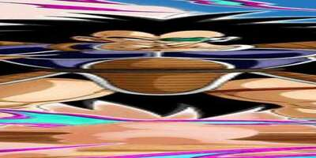
É...
Em geral, card bom, um pouco frágil as vezes mas útil pra caramba, e, tem pelo menos 1 ano desde a aparição dele e não teve mais nenhum personagem com suporte de redução de dano, oq mostra o quão valioso é esse carinha

Ele é um tank, e é basicamente isso.
Esse cara é um personagem muito específico, ele literalmente não existe sem o gokuzinho no time, mas se ele estiver, ele vira um deus
Ele não dá muito dano, não tem crítico ou 39 adicionais, ele só é um tank, mas ele é um tank tão insanamente bom..
Em resumo, depois do turno 5 ele é completamente invencível, o cara tem 80% de redução de dano MAIS o suporte do gokuzinho se tiver junto, é absurdo, nada dá dano nele..
Se pelo menos todos os cards secundários fossem bons assim né 💀
")
Certamente o rapaz chamado active skill estourada.
Infelizmente esse card não fez quase nada, as mudanças no eza foram boas mas não fizeram dele um top tier ou algo assim, ele só é usável de novo em algumas paradas mas não numa red zone ou sei lá, bem triste.
O retorno de uma lenda e um spoiler do dia dos saiyajins q viria.
Eu gosto desse card, ele é o tipo de card que não é um deus em nada em específico e isso faz dele algo muito versátil pra usar em qualquer time, além de ele ser o quadragésima quinquagésimo buff para os gods.
É um card bom, mas eles seguraram nesse eza, pelo menos ele veio no global primeiro e ficou assim por sei lá 6 meses? Infelizmente chegou sem uso no jp.
Eu quando um bando de F2Ps que são praticamente idênticos.
Todos esses caras tem a mesma passiva com coisas mínimamente diferentes
Todos tem 120% de ATK e DEF, são suportes pros respectivos tipos e aumentam o suporte e um pouco da passiva com 5 orbs pegos
O dabura ganha 70% de chance de stunar o inimigo
O grande saiyaman tem 30% de chance de desvio
O kuririn recupera 10% de HP
O nappa tem 50% de chance de critar
E o kame tem 30% de chance de defesa ativa... Qual é irmão
Enfim, é, como esperado, nada aqui é útil, certamente os ezas de todos os tempos..

Um dos cards que mais sofreu pela distância do global e jp.
Eles são um card até decente, tem uns números bons, suporte pra artificial life forms, adicionais direto no kit.. pô
Quando eles lançaram no jp eles eram um card decente, mas chegou no global tarde demais.. agora já não é mais aquela coisa
Uma pena.

Os devs realmente cozinharam quando decidiram que, de 3 LRs carnival, 2 seriam o goku ssj (e futuramente 3 de 5 seriam o goku).
Esse card é interessante, leader skill boa pra battle of wits apesar do piccolo laranja ter uma leader skill mais abrangente, 50% de ataque no super pros aliados e 50% de defesa pra qualquer super class, bastante ki, crítico e até adicional garantido oq é muito bom.
Outro ponto positivo desse card é a escolha no nome, já que ele é chamado apenas de Super Saiyan Goku e não algo tipo Super Saiyan Goku (Z-Fighters) oq ferraria os links e deixaria o card sem categorias, tipo um certo outro card chamado android 17..
O grande problema desse card é ter que levar um total de 10 ataques pra estar full buildado, o que, caso vc consiga por milagre, é bom demais já q o rapaz ganha scouter pra sempre e mais ki.
uhhhh tá?
Esse cara tava no banner do goku carnival e acho q é por isso q ele ganhou eza..? Sei lá
Ele era pra ser um suporte pra otherworld warriors pelo jeito, já q vc obrigatoriamente precisa deixar ele no slot 3 se não ele não tem metade da passiva
Enfim, ele tenta ser um suporte com um desviozinho qualquer mas ehhhh.. não dá né, categoria morta, time morto, e ironicamente esse goku tmb.

Buffs com múltiplos inimigos.
Card F2P aleatório que é bem ehhh.. nada de muito especial não
Precisa de um time warriors raised on earth, múltiplos inimigos e que alguns deles estejam debuffados, com certeza não é o tipo de card usável em qualquer evento de mínima dificuldade.
")
O nascimento de um deus.
Tretas depois, o gohan agl surge no global finalmente, obrigado akatsuki por ser incompetente..?
O famoso card de stackar defesa ganha um buff ainda melhor, já que estando acima de 58% de HP, vc tem defesa ativa, e de novo, a combinação de stackar e ter defesa ativa se mostra absurdamente quebrada
O gohan buildar 10% de ATK e DEF por turno em 7 turnos era um buff horrível e impossível de chegar, agr ele aumenta pra 80% no total e em 3 turnos já tá buildado, maravilha
Ele tmb ganhou 50% de chance de critar contra um inimigo androids, mas considerando parte da active dele, é um buff bom
E falando da active, vamo lá que coisas acontecem
Condições de active skills não podem ser alteradas com um EZA a não ser que o jogo implemente uma atualização que faça isso, oq significa que o gohan não teve a sua condição super fácil de transformar alterada
MAS, agora é muito mais tranquilo transformar o gohan doq em 2019, já que usando os gods de líder vc pode levar o hacchan, ou os gammas no time, facilitando muito em transformar o gohan, já que quando vc perder vida, se sua defesa ativa acabar vc pode transformar na hora e destruir tudo no jogo
Além de que obviamente, com a red zone red ribbon, tem bastante androids de boss lá pro gohan cozinhar
E já que falei de cozinhar..
")
Se vc chegou aqui, vc venceu a partida.
O gohan se torna o nuker mais forte do jogo, tendo o maior valor de ATK de todos na minha opinião

Olha, eu realmente gosto pra caramba do gohan pq o eza ajudou demais essa parte do card, agr ele é orb changer duplo, finalmente tem ATK e DEF no começo do turno, e tem óbviamente o dano absurdo
É legal que agora ele tem todos os buffs, mais a chance insana de crítico, junto com o buff de 59% de ATK se tiver um super saiyan goku com ele (de preferência um que compartilhe 7/7 links com ele) e agora o gohan consegue lançar muitos adicionais, todos que aumentam ainda mais o dano e a defesa dele, q é meio desnecessário já que quando vc lembra q esse cara stacka defesa em ssj e toda a defesa dele é passada pro ssj2, então dependendo de quando vc transformar, vc vai dar ataques de 20 milhões com crítico e mais de um milhão de defesa, literalmente um monstro
É exatamente por isso que, mesmo que seja difícil fazer esse cara aparecer, quando ele aparece, já era pra qualquer boss.
")
A definição pura de "esperem e deixem ele cozinhar".
Esse cara é muito engraçado, ele na forma base é super simples e horrivelmente ineficaz, o cara tem buffs baseados em inimigos 💀
O plano é cair abaixo de 40% de HP e transformar o mais rápido possível, pq mlk, se vc ficar trancado nessa forma vc tá muito ferrado..

Uhh com licença senhor, você derrubou o BALANCEAMENTO DESSE CARD
Esse cara literalmente vira um deus transformado, por onde eu começo?
Bom, ele cura 100% da vida (balanceado), é orb changer pra rainbow orbs, ganha 3% de redução de dano por orb pega (balanceado)...
Além disso ele é um quase nuker, já que quanto mais orbs vc pegar, mais insano ele fica (o total é 8 orbs q dão 120% de ATK e DEF a mais), e pra completar ele tem uma active que dá um dano absurdo e toda vez q ele estiver com 24 de Ki ou no turno da active, ele tem 100% de ATK a mais e 50% de chance de crítico, como faz pra balancear?
Eu amo esse card, as condições de transformar ele são bem menos específicas que o gohan e ele é muito absurdo transformado, é realmente uma pena q ele na forma base seja tão mid..
A celebração que estranhamente teve bastante coisa pra fazer.
Seria uma celebração bem simples se não juntassem com o dia dos namorados gringo e tmb jogassem os ezas do gohan e cell aqui, oq é super bizarro e o global merecia morrer por isso, mas graças a isso teve pelo menos bastante coisa pra fazer no mês

O lançamento com potencial que não teve potencial nenhum.💀
Lançado logo depois do gokuzinho, a esperança que esse card passou foi insana, já que além dos potenciais EZAs (incluindo é claro o grande Bardock AGL), esse card poderia ter feito algo similar ao Ginyu AGL, trazendo 2 cards secundarios do time Bardock no banner, o que faria o time usável novamente em eventos difíceis. Infelizmente, o card foi lançado com a mecânica de scouter bugada (o scouter só estava ativo em turnos onde o personagem estava presente), com um card secundário que é decente, mas não o bastante pra fazer um time funcionar e sem parte 2 na celebração.
As únicas coisas boas do card são a leader skill para qualquer Goku do jogo, as animações que são boas, e suas OSTs que também são muito bem feitas (vale mencionar que a intro do card ainda é uma das melhores do jogo).

Esse cara é maneiro.
Ele tem 30% de redução de dano, 30% de chance de desvio, 60% de ATK e DEF pra geral se tiver um bardock no time, e ele até dá um dano decente
No geral ele é o melhor parceiro pro bardock dokkan fest já que eles compartilham 6/7 links e com esse suporte, o bardock consegue se manter com uma defesa mais aceitável.

Falem oq quiser dele, mas esse cara é gente boa.
Ele é literalmente um birdku versão 0.5 que tmb é um suporte, card incrível demais
Tipo, ele não dá dano direito, mas mlk, ele consegue até ser um tank confiável, já q ele leva 1 ataque e ganha defesa ativa no turno, oq significa que sim, no primeiro golpe ele é extremamente frágil, e depois disso ele consegue tankar legal, é meio q um personagem alto risco/alta recompensa, já q o suporte é bom, ele linka decentemente com outros saiyajins e funciona em times fortes como bonde do pai e filho.

ehhhhh.
O bardock teq é um nuker mais ou menos, é até decente se vc pegar 8 ou mais orbs, mas isso é difícil, já q ele só muda orb str pra teq, e isso é horrível
O str precisa atacar 700 mil vezes mas se ele conseguir, ele tem uma defesa interessante, e é um suporte pra qualquer um, então é, bem ok mas podia ser melhor.

Suporte.
Esse é o personagem pra showcase de outros, ele dá 50% de ATK pra todos super class
E ele tem uma defesa minimamente decente, já que ele até dá um adicional garantido com outro power beyond super saiyan no time, mas é bom colocar desvio nesse cara pra pelo menos vc não morrer enquanto testa outro card
E hey, ele é o melhor card pra battle road de super saiyan 3.
Sheeeeesh, o hype
Quando revelaram na vjump que o goku god iria ser o card da celebração, geral ficou bem hypado pq já tava a anos a espera por um dia dos saiyajins com o goku god, oq é bem justo, já q é a melhor celebração possível pra ele ter destaque e ganhar um dokkan fest de respeito.

O melhor card do jogo.
Não há palavras que descrevam esse card, ele simplesmente é o card mais competente, mais brabo, mais versátil e mais gente boa possível.
Pra começar ele tem um dos melhores combos defensivos do jogo que existe: Defesa ativa + stack, q simplesmente já torna ele um card brabo demais defensivamente.
Mas não para por aí, o rapaz junta isso com 60 fucking % de desvio, ou seja, ele já é um monstro na defesa, mas antes vc tem q tentar acertar ele, e é claro, diferente de certos cards de 70% (sim goku mui), ele desvia de forma competente de supers e aoes.
E isso foi a parte defensiva, já falei da ofensiva do rapaz?
Sabia q esse mano stacka ATK tmb? E sabe oq mais? Super adicional garantido pra ele stackar mais e mais rápido, e tudo isso pegando apenas 6 orbs
Parece difícil? Não é. (Já falei q é o melhor card do jogo?) Pq o goku é versátil demais e literalmente entra em qualquer time de floater ou não, já q ele é autosuficiente e cria os próprios orbs q ele vai usar, precisa falar mais?
Junta isso com uma top intros mais lindas e osts maravilhosas e vc tem exatamente: o melhor card do jogo.

A active do goku virando ssj é muito boa, mas entra na situação do gohan teq onde vc não tem motivo pra transformar o card e perder o stack.
Pelo menos diferente do gohan teq, dá pra transformar o goku god pra finalizar a luta já q ele tem 70% de desvio transformado além de manter a defesa q vc já stackou e crítico garantido, mas no geral nem precisa então meh
O raditz voltou no banner desse cara e ainda sim summon era garantida, isso q é potência slk.

Esse card secundário é muito brabo.
Ele não é necessáriamente o melhor parceiro existente do goku god mas ele foi bem insano, tendo o raro suporte q dura mais de 1 turno e tmb defesa ativa por 5 turnos.
Um grande problema do card é que ele precisa tomar ataques pra buildar (precisando de 6 pra transformar) e no primeiro turno ele é bem frágil apesar de ganhar defesa bem rápido, ainda sim se vc usar ele de floater ele provavelmente vai ser cozinhado vivo se a defesa ativa acabar e vc não conseguir transformar ele.
Falando da transformação dele..
Dêem a ele um movie bosses e deixem ele cozinhar.
Se vc usar esse cara em uma rotação principal vc talvez esteja louco, mas pelo menos vc vai transformar ele e ouvir uma ost muito boa.
Não é muito difícil explicar esse card, ele só dá bastante dano e tem bastante crítico, e se estiver contra um movie bosses ele dá mais dano e mais um adicional, basicamente isso.
E ele fica com defesa ativa permanente oq é legal mas não espere dele 900k de DEF ou algo assim pq não rola, pelo menos ele linka bem com o vegeta e trunks..
Um suporte bom e um mid.
O teq é decente mas deixa a desejar já q ele precisa de bond of master and disciple e realm of gods pro kit todo dele, enquanto o int já tem suporte e 50% de desvio (é meio difícil ele desviar mas eeeeeee tamo aí)


Defina o termo "mid"
São eles.
Ok, até que o goku god str é usável, mas o resto é realmente mid pra horrível
O int seria interessante mas fica efetivo toda vez que ele ataca 3 vezes, oq é ridículo, o agl stacka 50% de ATK mas tem uma defesa horrível e ganha 30% de crítico por ATAQUE LEVADO
O str pelo menos tem stats decentes de 30% e redução de dano, oq ajuda ele a pelo menos ser mais decente, tá ótimo considerando q mais da metade desses ezas são horríveis.
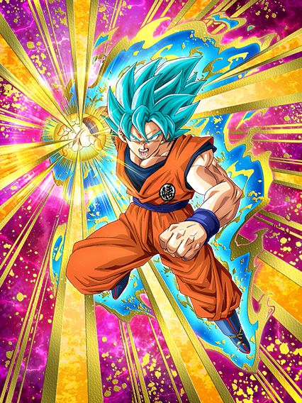
Passiva estranha, mid.
Mais um card com stats baixos e com um pedaço da passiva estranho
30% de chance de dar um adicional em 2023? Bruh 💀
Ele tmb ganha buff se estiver contra 2 inimigos, mas isso é inútil.

O que era pra ser isso..?
Esse card é o clássico "tanka auto attack e morre pra qualquer super"
Ele tem redução de dano contra apenas auto attack e dá counter em todos, mas apenas isso
É ridículo, simplesmente nada a dizer a não ser rir desse rapaz
Ele tem o rage mode de um pouquinho de dano, mas sem crítico, sem efetivo, sem adicional
Podre.

o lider nuker.
Bom, o bills não tem defesa mas tem um ataque decente e é um lider nuke, então, é só isso mesmo, não dá pra reclamar.

Esse foi um eza interessante.
Sendo infelizmente o único eza decente da celebração toda, esse card tem uma defesa interessante, cura bastante vida, tem um bom dano e 50% de desvio oq é sempre bom, uma pena q ele não entra em basicamente nenhum time exceto realm of gods e só linka com outros bills ou whis.
Sim, esse é o verdadeiro primeiro de abril.
Eu vos apresento: um card inútil que não dá dano, não tem defesa e não ajuda em absolutamente nada
Pra melhorar, esse card ainda é uma fraude, já q veja bem:
Esse card custa 777 gemas verdes na baba shop, digamos que você não quer gastar kaioshins pra upar o super dele, e tmb quer deixar ele rainbow
Isso daria um total de 14 cópias, ou seja, 10878 GEMAS EM UM CARD INÚTIL
E claro, isso sem contar se vc quisesse comprar mais 5 cópias pra upar o super dele pós eza, que daria 19 cópias ou 14763 gemas.. 💀
Esse card pode cozinhar o cell max... pera WHATA-
Essa Bulma foi um dos 2 EZAs de primeiro de abril, e cara, que card genial
Pra começar ela é um awaken de uma bulma muito antiga e é um awaken MUITO BOM, e ainda o EZA deixou melhor ainda
Pra começar essa bulma tem uma introzinha super simples dela conhecendo o goku, q não tem voz nem ost mas pô, momento importante pra história né, maneiro, e mlk essa intro vem com um buff só um pouquinho desbalanceado..
Ela tem 50% de chance de desvio sem condição nenhuma oq já é ótimo, mas a intro dá pra ela simplesmente +29% de chance de desvio por 4 turnos, oq é pouco, mas MLK, é praticamente 80% de chance de desviar, ela tem mais desvio q o goku mui
Além disso ela tem uma mecânica muito genial de, a cada ataque q ela desviar antes de atacar, ela ganha 41% de ATK no turno.. já sabe oq vai acontecer se tiverem 5 ataques no slot 1 né?
Como se não bastasse, ela aínda é um suporte pra DB Saga, literalmente só mais um buff insano pro time do gokuzinho, cara, q card incrível
Tipo, sim, ela precisa do gokuzinho no time pra ter um pedaço da passiva mas ele é o lider perfeito pra DB Saga, então nem faz diferença, cê não vai usar a bulma em outro time

Literalmente o "POV: Você é o Grande Saiyaman"
Outro eza de primeiro de abril e honestamente eu gosto demais desse card, não só a animação do super attack dele é genial, mas a arte é muito boa e ele tem um kitzinho decente até
Chance de crítico, chance de desvio, suporte..
Lógico, só pra incrível categoría defenders of justice, mas pelo menos esse card é muito bom pra debuffar e selar no battlefield por exemplo, ele tem seus usos..

Uma celebração.
A celebração meio paia entre o dia dos saiyajins e a golden week, então geral não foi tão louco pelo yamcha pq ele é bom mas todo mundo sabia q oq viesse na golden week valeria muito mais.

Nós realmente vivemos na realidade rara onde o yamcha é um card top 10.
Esse card é interessante, primeiramente ele q trouxe pro jogo a categoria q se tornaria uma das melhores, warriors raised on earth (não dokkan global, o goku não nasceu na terra) e tmb trouxe um banner unit incrível.
Esse card se resume a desviar e dar o máximo de supers antes que a intro dele acabe, já q ele consegue dar muito dano com chance de crítico já no kit e 50% de desvio, junto com uma active muito braba e decente, além de ele buildar com 5 ataques normais, sem precisar ser super, diferente de um certo outro card sem transformação..

O card q revolucionou a indústria de cards secundários.
Se eu não me engano o primeiro card suporte que realmente foi feito pra ser um suporte, já q ele literalmente ganha metade do kit estando no slot 3, dá suporte por 2 turnos, tem 70% de desvio e tem a mecânica hilária de sobreviver a qualquer ataque com 1 de vida, oq pode te salvar (ou não xd)
Esse rapaz tem uma active extremamente quebrada e fora do comum, onde ele te dá uma semente dos deuses.
Não parece tão impressionante até vc lembrar que a semente dos deuses no jogo cura 100% da vida e remove debuffs q o boss possa dar em vc, e ele faz isso de graça, sem contar como item caso vc seja fanático por No-itens das fases difíceis ou esteja levando um whis de item como qualquer ser humano normal.
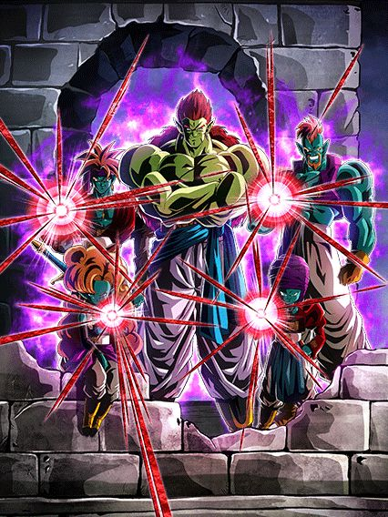
Oq esse eza tá fazendo aqui mesmo?
Tirando o fato de não ter absolutamente nada haver com o yamcha e etc, foi um eza decente que consegue até funcionar, tem um dano maneiro, troca orbs e até que a defesa é boa, mas no geral as maiores utilidades dele é ser lider de extreme int pra battlefield e ele serve no time do cooler LR pra missões de red zone pra usar todos os tipos, então é, ele tem seus usos, só são poucos.
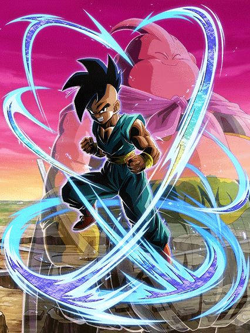
Outro LR do battlefield que demorou demais pra chegar.
Esse cara é extremamente fraco na forma base, ele só tem 200% de ATK e DEF e um suportezinho pra todo mundo, mas isso obviamente não é o bastante, então é, procure transformar o mais rápido possível
E no caso.. tal transformação acontece assim q vc cair abaixo de 50% de HP
(por sinal, eu acho "legal" comentar que esse cara na base tem um dos piores linksets do jogo, meu amigo, que card bizarro..)

É ele, ele é o majin power.
Transformado esse cara é muito bom até, ele tem 120% de ATK e DEF, e sendo o único majin power no time, ganha mais 120%
Caso tenha outros majin power, ele vira um suporte de 40% de ATK e DEF, bem interessante já q ele tmb é orb changer
No final das contas, nada mal ein, uma pena q é chatão farmar esse tipo de card..
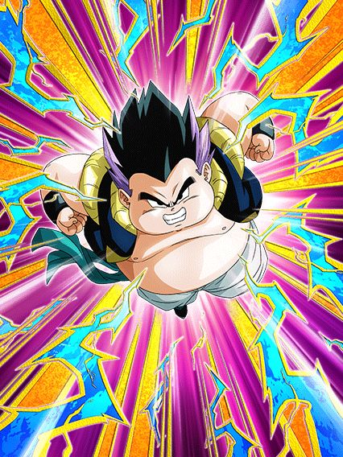  B")
Acharam
Acharam os super strike decentes.
Esses dois tem kits similares e são até bem decentes, eles são nukers levemente zuados, já que eles ganham 30% de ATK e DEF por orb, mas a cada turno esses 30% vão abaixando pra 20 (no caso, o gotenks gordo demora mais que o magro, mas ehh dá na mesma)
A maior diferença dos dois é q o gotenks gordo precisa específicamente de orbs phy pra ganhar mais DEF, mais ATK e mais chance de crítico, enquanto o magro pode ser qualquer orb
No geral, até que não são ruins não tá, eles podem ajudar em eventos (específicos, sim, mas ajudam), além de linkarem bem um com o outro.
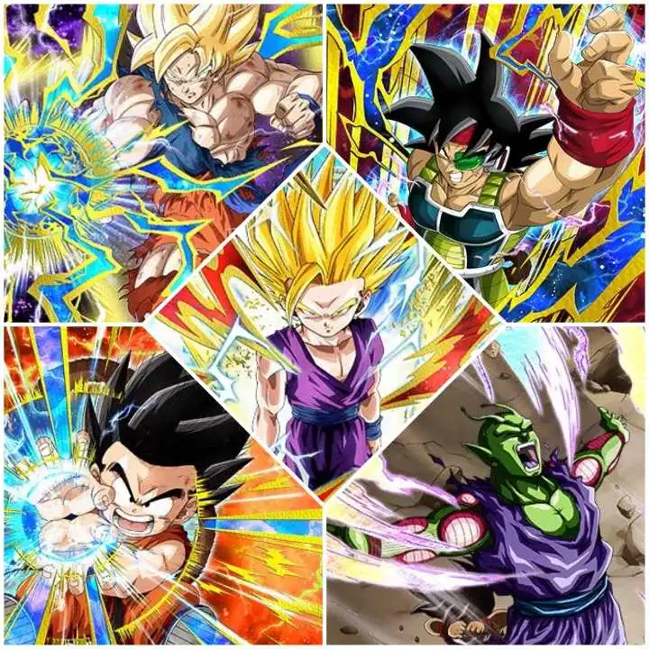
Os primeiros ezas desse modo horrível, e provavelmente os melhores
Começando pelo Piccolo, ele não dá dano mas é um tank muito bom, nem parece um F2P
Infelizmente ele é limitado a ter um gohanzinho no turno, felizmente no aniversário tem o gohanzinho carnival, literalmente salvou esse cara
O Goku ssj é outro brabo, suporte de 50% de ATK e DEF mais 7% de crítico pra legendary existence, q é uma categoria bem morta mas não inútil
O Bardock provavelmente é o mais simplão dos 5, já q ele não faz muita coisa além de ser um suporte de 50% de ATK e DEF pra todos AGL e STR
O Gokuzinho é bem triste infelizmente, ele stacka ATK e DEF mas infelizmente precisa de vários inimigos pra ter passiva, aí é complicado
E claro, deixei o melhor pro final.. o Gohan ssj2
O cara é simplesmente um suporte de 50% pra TEQ, AGL e PHY, enquanto OBRIGATORIAMENTE precisa estar no slot 3 e ainda stacka DEF, oq mais pode se pedir pra um suporte? Amo esse cara.

Essa foi diferenciada tá?
Quando revelaram numa producer letter do global q o tema da golden week era o 23° torneio de artes marciais, geral ficou muito doido, finalmente era hora de buffar o db clássico e dessa vez eles tinham q acertar em todos os cards
Bem, eles conseguiram.
Comparar esse card no turno 1 e depois no turno 3 é engraçado.
Bom, vamo lá né
Esse goku tá num nível meio fora do normal pra todos os outros dokkan fests
Pra começar ele tem uma intro, KI+2 e 101% de ATK e DEF sem nenhuma condição, ele só ativa por 5 turnos
Isso em cima dos KI+3 e 150% de ATK e DEF q ele já tem de base
Ele tmb fez algo meio engraçado no global, já q o yamcha veio com a categoria warriors raised on earth e era o único líder no jp, mas no global o goku veio logo depois do yamcha então ele perdeu ainda mais do valor.
E aí vem a grande mecânica do goku: Ele precisa tomar 10 ataques pra buildar mais 100% de ATK e DEF, e ele builda mais 100% de DEF tomando 5 ataques se a defesa dele estiver ativa
E pra auxiliar ele nisso, no turno 1 ele tem defesa ativa garantida e a partir daí 50% de chance de ativar de novo
Esse é o único ponto fraco do goku, ele builda rápido pra caramba mas tem q se lembrar q defesa bruta já não é mais o bastante pra tankar os bosses, então vc se baseia na pergunta “será que a defesa está ativa?”
Mas o rapaz não é apenas defesa, já q caso a defesa esteja ativa, ele lança um adicional com 70% de ser super e contanto q vc esteja contra 1 inimigo (oq não é difícil), o goku vai estar efetivo contra todos os tipos sempre
De cereja no bolo ele tem 50% de chance de nulificar supers de ki, e só deixando bem claro, essa nulificação tmb conta pra buildar a passiva do goku.
Ok ok, você fez de tudo, buildou e ainda sim tomou muito dano
Bom, hora de usar a standby do rapaz:

Caindo abaixo do clássico 59% de hp e depois de 6 turnos vc pode usar a standby (Obervação: esses 6 turnos são a partir da primeira aparição do goku, então se ele aparecer no turno 1 vai ser no 7, mas se for no turno 2 vc só vai poder no turno 8 e por aí vai)
E essa standby é do tipo revive-counter só q mais fácil q dos GT boys, vc pode só jogar o goku onde tiver mais ataques e morrer, bem simples
Vale mencionar q o goku não ataca mas dá 59% de ATK de suporte pra qualquer um e 100% de defesa caso seja warriors raised on earth e world tournament, e tmb tem scouter, então se vc quiser ainda dar um dano a mais antes de reviver, é interessante
Como o goku não stacka nem nada, ele não vai nukar o inimigo ou algo assim mas ele dá um dano decente.
E aí vem a parte mais engraçada desse card: o god-mode (batizado assim pelo grande datruth)
O goku fora da standby tem um pedaço da passiva especial onde caso ele ou outro personagem do time ative um revive, ele ganha 150% de ATK e DEF em cima de todo o resto da passiva dele, lança um super adicional garantido e fica com defesa ativa pra sempre
Caso vc tenha buildado ele todo antes de reviver, pós-revive ele fica praticamente invencível e começa a dar muito dano
E se vc usar alguns neurônios, já deve ter entendido oq é possível fazer
Caso vc use outro card q reviva e consiga reviver no começo da partida, quando o buff da intro do goku ainda tá ativa, ele vai acumular os 150% do revive com os 101% da intro e oq vc buildar tomando ataque, então além de dar um dano absurdamente alto com praticamente 3 supers de 10 milhões efetivo contra tudo, vc ainda fica sem se preocupar com a defesa já q ela vai estar sempre ativa enquanto vc tem 1 milhão e pouco de DEF
Um fato extra: Algumas pessoas usaram o metal cooler LR no time do goku sem leader skill pra reviver fácil e ativar o god-mode e varrer os eventos (eu diria q é uma estratégia válida).
Foi muito argumentado se o goku pós revive era o melhor card do jogo e realmente foi uma possibilidade.

Ele é muito bom... se der os adicionais
Esse cara é interessante mas muito situacional, já q ele lança 3 adicionais, cada um com 50% de chance de serem supers, e ele ganha 71% de ATK e DEF por super feito, ou seja, ele PRECISA desses adicionais, pq isso ajuda ele a sobreviver caso ele erre na 50% de chance de desvio q ele tem
Em geral se ele desviar, beleza, se ele não desviar e vc tiver azar nos supers, vc morre.
Bem simples e direto né..

O destruidor do world tournament, das red zones, dos ezas, das battle roads, no geral um monstro.
Grande piccolo jr. (ou Majunior), o raro buff extreme levemente insano e o líder secreto pra giant form q não tinha um 170% até hoje.
O piccolo é bem parecido com o cooler LR, focando bastante em dar vários supers e assim virar um tank, mas ele faz isso mais rápido e fácil
Ele precisa lançar 5 supers pra buildar 100% de ATK e DEF, e ele consegue fazer isso bem tranquilamente já q no turno 1 ele já consegue lançar 5 supers 💀
Ele tem a exata mesma intro q o goku, com 101% de ATK e DEF sem nenhuma condição, mas ao invés da defesa ativa o piccolo tem 50% de dar mais um super attack adicional, e falando de adicional..
Ele fica efetivo contra 1 inimigo apenas e tem 30% de chance de dar um super adicional
E tem uma mecânica de slot bem diferenciada mas q funciona bem, onde:
Se vc fez as contas certinho, o piccolo pode lançar 5 supers imediatamente e assim vc já fica buildado
E esses 100% em cima de uns 400k de defesa em 55% dão uma diferença legal, mas caso sua vida caia abaixo de 60% depois do turno 4..
A cereja no bolo q o piccolo precisava ter: uma forma gigante.
É uma forma gigante decente, ele sempre tá efetivo contra tudo e tem chance de critar, além de dar um dano legal, mas o grande negócio das formas gigantes é impedir o boss de dar supers ou aoes, então é só mais um extra pro piccolo
E agora é hora do god-mode do piccolo
Bom, depois de tudo já dito, o piccolo tmb tem uma active, e essa active é insana.
Não só ela é um aoe q builda ele de graça e ainda quebra 1 ataque de todos os inimigos, mas tmb pode ser ativada quando vc tiver menos de 50% de HP depois de 4 turnos OU a qualquer hora caso tenha mais de um inimigo, então a ativa praticamente destrói battle roads e faz do piccolo o card n.1 pro world tournament, mas ela faz mais uma coisa
Os buffs de slot do piccolo ativam quando ele atacar, e a active dele é um ataque, então agora ele acumula os 100% de ATK e DEF e o adicional do slot 2 com os outros 160% do slot 1, oq faz ele lançar 5 supers, todos com um dano absurdo e aumentando ainda mais a defesa dele q já é muito alta.
O piccolo foi considerado o melhor TUR do jogo quando lançou e continua no top 3.

Oq mais eu posso pedir de um personagem?
Esse cara é praticamente a segunda vinda do Piccolo STR, o cara é um suporte tank que consegue se segurar sozinho contra os bosses
O cara dá 40% de suporte enquanto linka super bem com o goku descalço, ganha um buff q dura 4 turnos levando só 1 ataque, tem 40% de redução de dano q é 60% antes de ele atacar, tem 50% de chance de critar.. sabe.. fica difícil reclamar desse cara
Lógico, ele n é invencível ou coisa assim, mas uma buildzinha de desvio nele.. rapaz..
Ah sim, o personagem impossível de zuarem.
Geral achou que esse cara ia ganhar eza na celebração do super hero mas não foi o caso, ao invés disso foi aqui e a espera valeu a pena, ele é insano
Esse cara é genial, pra começo de conversa ele tem scouter permanente incondicional, isso já coloca ele num nível acima do resto, junta isso com o stack de DEF dele, curar vida, e o fato de ele linkar bem com o LR mais insano de todos, simplesmente absurdo
A simples existência do Piccolo laranja e Piccolo STR agora fazem a condição da active desse cara muito fácil de usar, já q ele precisa de um namekuseijin no time, é perfeito.
KKKKKKKKK O BALANCEAMENTO NÃO EXISTE
Esse cara simplesmente tem 40% de redução de dano com a defesa q ele stackou antes de transformar, além de stats muito bons, os supers dele dão um dano muito bom e tem 40% de chance de critar
Isso ainda mantendo a cura e o scouter, sabe.. como é justo?
De novo, era impossível zuarem esse card, ele já tinha coisas fortes demais antes do eza e ele estar assim é a prova disso.

Pelo bem da celebração, alguém tinha q levar o tiro..
E foi esse cara.
Ele é bem auto explicativo, 70% de chance de ter 100% de ATK e DEF, preciso falar mais?
Ok, eu posso falar que ele ganha mais incríveis 50% de ATK e DEF contra um inimigo turtle school
Pronto, eu não vou falar mais nada não
")
Enfim assistiram o tutorial de como cozinhar.
Eu diria que o jogador médio de dokkan (incluindo eu) não compreende o quanto a bulma faz diferença em qualquer time até realmente ter ela, ou eu só sou estúpido mesmo.
A bulma literalmente se tornou o melhor card do jogo por ela ser a faz-tudo que faz tudo super bem, eu não consigo entender como alguém pensou em transformar uma suporte insana em uma tank E uma nuker também
A bulma é meio similar ao gokuzinho phy, pegue 7 orbs, assim ela vai ter um ATK e DEF extra bons por ser nuker, vai dar um adicional garantido oq é muito bom já q ela aumenta DEF e chance de crítico em 50% em ambos supers, e vai ativar o suporte absurdo de 3 de ki e 37% de ATK e DEF pra todo mundo por 2 turnos
Esse é facilmente o ponto mais forte da bulma, é o suporte que dura mais de um turno e q é muito alto, além de não ter restrição nenhuma além dos orbs
A bulma literalmente facilita a vida dos LRs do oitavo aniversário, e consegue fazer até o fraudehan ter ki, isso q eu chamo de potência.
Falando sobre a defesa dela, além dos orbs e tals, ela tem defesa ativa por 7 turnos e a cada turno ela ganha 7% de redução de dano (isso chega até 77% mas vc nunca vai ver pq a luta vai acabar antes), além de ela ser orb changer então pegar orbs não é difícil e vc cura bastante vida se pegar orbs str.
E aí vem a cereja do bolo, a active skill.
A bulma finaliza o status de melhor card do jogo tendo a ativa mais absurda de quebrada do jogo inteiro, já que agora ela adiciona mais 17% no 37% de suporte dela E deixa os aliados efetivos contra todos os tipos no turno
Eu não sei o quão absurdo isso pode parecer mas deixar as genki damas dos LRs do oitavo aniversário ou o kamehameha mais fraco do gohan agl (45 milhões xd) efetivos contra tudo literalmente destrói o jogo já q a maior fraqueza desses ataques é exatamente não critar e não dar dano o bastante, com isso, não importa mais
E é claro q eu tinha q deixar pro final o fato da bulma mudar todos TODOS os 23 orbs no campo pra str de graça, o que obviamente te dá o suporte, DEF e ATK máximos e simplesmente deixa ela no 100% de potência.
Eu acho q ficou bem óbvio o pq da bulma ser o melhor card do jogo, ela literalmente não tem falhas e o suporte dela muda a forma q vc usa alguns times, e claro, ela nem precisa de cópia pra ser boa assim.
O dokkan com certeza não vai mandar outro suporte assim pro jogo por um bom tempo, mas não é como se a bulma fosse envelhecer mesmo..
Eu quando mais uma bulma muito decente:
Essa bulma literalmente ficou muito tempo sem eza mas o dela ficou muito bom, já que ela virou uma tank muito insana
Em resumo a bulma cura vida com rainbow orb, e a passiva dela só tem isso, meio óbvio q ela não dá dano
O grande diferencial dela é ela ter 70% de chance de ter 77% de redução de dano, q é só um pouquinho alta demais e torna ela invencível contra quase tudo no jogo
E a melhor parte é q caso os 70% ativem, eles ficam até o fim do turno, mas caso não ativem, o jogo vai jogar a moeda do 70% a cada ataque q vc levar até uma hora ativar, algo q é bem quebrado considerando que ela é uma tank
No geral um card bem usável pra uma f2p e boa pra caramba, só tem q tomar cuidado com os 70%, dependendo da luta 1 golpe é o bastante pra te matar antes da redução de dano ativar.
Mais uma vez a golden week cozinha.
Esse cara não ironicamente serve como um substituto perfeito pro Kuririn STR se vc não tiver, e se tiver, melhor ainda então
Esse cara é um suporte de 50% de ATK e DEF pra TEQ e INT, já começa por aí, ajudando o goku do torneio
Por sinal ele linka legal com ele, e funciona perfeitamente, já q esse cara tem defesa ativa e mais defesa caso tenha um aliado turtle school no time (uau, que coincidência)
Como se não bastasse, ele ainda tem dano bom e builda crítico atacando, que personagem genial
90% dos cards da golden week são incríveis, os buffs q DB saga receberam foram insanos demais slk
MAIS UM, OS CARAS NÃO ERRAM.
Esse cara é absurdo, ele precisa de peppy gals no time mas o time DB Saga tem 3 bulmas diferentes pra usar, não tem desculpa
Buffs esses que incluem 50% de suporte pra TODOS super class, defesa ativa, +150% de DEF q torna o Yamcha um tank muito decente, e um adicional com 70% de chance de ser super
Parte disso só vem após o turno 5, mas tudo certo, a parte defensiva tá sempre ali então tá ótimo, card incrível e foi meio inesperado o quão bom ele ficou, pq ele ficou muito bom
Infelizmente.. foi o último buff desse ano pro time, mas o time continua competitivo slk
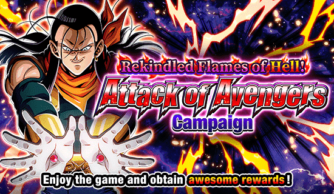
A última celebração antes do aniversário.
Sendo bem honesto, o super 17 já é uma piada pra geral e esse card é todo estranho, é bom que essa celebração tinha junto a contagem regressiva pro aniversário pq se não tivesse a gente ficaria 1 mês sofrendo com algo desinteressante q quase ninguém fez summon.
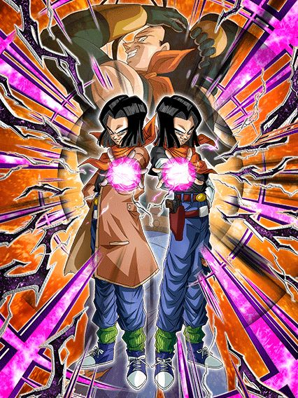
O personagem que não pode ser derrotado.
Esse card está em outro nível, ele simplesmente destrói todos TODOS os eventos do jogo
Pra começar eles tem uma leader skill insana pra TARGET GOKU que claramente é um time usável no jogo, e joined forces, onde eles sendo extreme e com link skills bizarras não funcionam no próprio time.
Mas claro, é complementado com uma defesa impecável
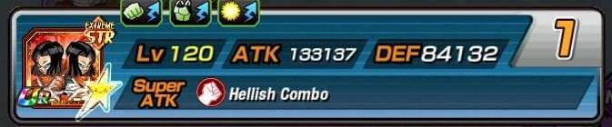
(obrigado auã pela print do card em 55%, sem vc não teria conseguido)
E é claro, precisa de um time full extreme class para assim ele ter opções piores ainda de parceiros e morrer mais fácil
Junta isso com mais da defesa horrível no super e vc realmente garante q vai morrer no turno 1
Mas n tem pq se preocupar! Afinal de contas esse card ESPLÊNDIDO stacka ATK no super, e como ele não dá dano, vai adiantar de nada essa miséra.
Mas claro, tudo irá mudar e fazer a diferença caso vc chegue com menos de 70% de HP no turno 5, e então vc irá cozinhar.
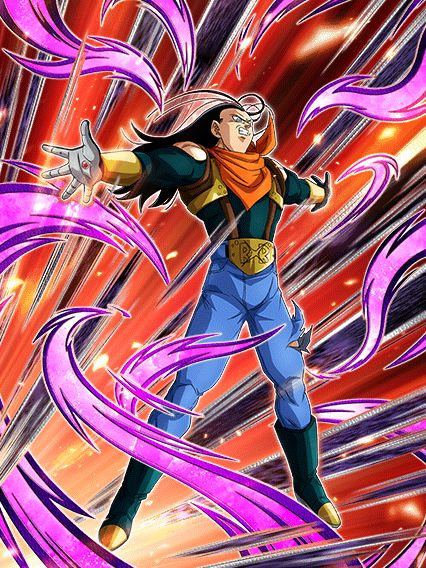
"HAHAA NOBODY CAN BEAT ME WHEN I'M SUPER 17"
Vc transformou o super 17? Não há tempo para argumentar, é hora de cozinhar.
O super 17 literalmente se contradiz na metade do seu kit, já que essa desgraça faz a seguinte sequência de passos:
Sabe.. isso não encaixa
Não adianta absorver supers e curar vida se a vida q vc cura tem base no dano q vc receberia
E A SUA DEFESA É ALTA DEMAIS
É realmente muito comum ver o super 17 absorver um super e recuperar 3 de HP, sem ironias
A mecânica de absorver sendo ligada a vida não faz sentido, além de ele ter uma redução de dano estranha q dura 4 turnos e depois q ela acabar vc provavelmente vai morrer
Claro, ele builda defesa tomando alguns ataques, e com alguns, eu quis dizer 10.
É só calcular quando vc vai tomar tipo, 7 ou 8 ataques num turno e finalmente vc sabe quando transformar

Enfim, o card de todos os tempos.

O suporte tão bom pro super 17 que não tá nem no 200% dele.
Eu juro, a única utilidade desse card é q o SSR deles rendeu memes, é literalmente só isso
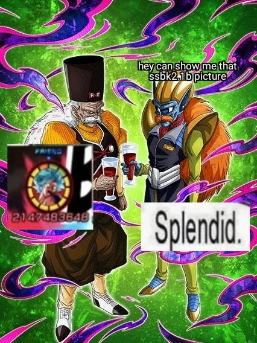
Contra um goku, eles tem defesa ativa, stats legais, dano mais ou menos, ok, mas caso contrário, eles não tem NADA
É real um card inútil, e triste, pq as animações deles são boas demais..
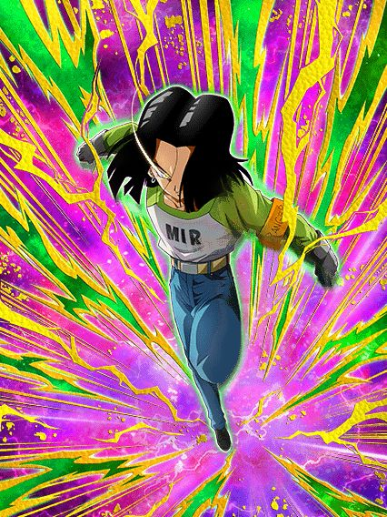
O suporte de defesa.
Esse cara é bem interessante por entrar em vários times estranhos e conseguir ajudar demais
De base ele já dá 60% de DEF pra todos sem restrição, enquanto é um tank bem decente e builda um pouquinho levando ataques, isso junto com 17% de redução de dano
Não é muito, vdd, mas quando vc cai abaixo de 77% de HP, o suporte aumenta pra 77% de DEF e ele fica com 57% de redução de dano, ficando meio invencível contra a maioria das coisas
Claro, estar abaixo de 77% de HP não vai ser constante e acima disso vc fica meio vulnerável a supers, então não dá pra contar demais com isso, mas pelo menos ele é um eza bom.
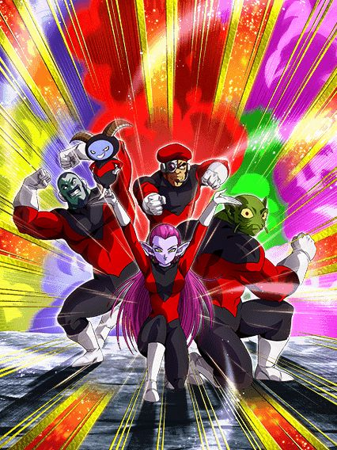
Ah, mid.
Na vdd nem tanto, é q ele precisa de um time universo 11 pra funcionar e essa categoria é praticamente inexistente
Esse cara é muito bom por si só, stacka DEF, bons números, suporte, 2 adicionais com 50% de chance de ser supers..
Se fosse analisar ele num vácuo, ele é muito bom, mas como ele precisa de um time que não existe pra funcionar, ele é praticamente inútil, não tem onde usar ele
 & Goten (Kid) & Marron")
Tá.. eu desisto
50% de chance de desvio depois do turno 5? Wowww que incrível..
Que bom que eles PERDEM ATK e DEF até chegar no turno 5 tmb, que divertido haha
Eu não farmei esse card até agora e não vai ser hj q eu irei.
")
UM CARD BOM?????
Aproveitar pra apreciar a arte desse cara, é muito boa
Agr falando sério, esse cara não é de todo ruim não, ele builda uma defesa legal, aumenta DEF em ambos supers, cura vida, tem big bad bosses..
Pra um F2P eu acho isso bom demais, já é uma ajuda pra outros Cells
")
O herói do universo 6 no jp e o grande arqui-inimigo do super 17 q salvou geral no GT.
Palavras não são o bastante pra descrever a magnitude desse card, os caras não quiseram cozinhar, eles pegaram uma churrascaria inteira e tacaram fogo 🔥🔥🔥
Não tem nem como explicar esse kit, só pega:
🗣🗣🔥 Leader skill de 150% em 2023 🔥🔥
🔥🔥 70% de chance de defesa ativa 🗣🔥
🗣 9 categorias (todas horríveis) 🔥🔥
Sendo menos irônico, o super buu tem suas coisas diferenciadas, tipo o fato de ele ter um dos maiores valores de ataque do jogo (e se eu não me engano o maior do jogo no turno 1), a active dele é muito boa e as animações e osts são boas tmb, mas ele saiu no pior momento possível já q ele foi o último card antes do aniversário no global e é um yellow coin, então não adianta ser decente, ele ia ser ignorado de qualquer jeito.

Usável por 5 turnos.
Esse cara é um nuker, orb changer e suporte interessante, oq mais ajuda nele é ele ter 50% de chance de desvio por 5 turnos, depois que isso acaba... Ehhhhhh
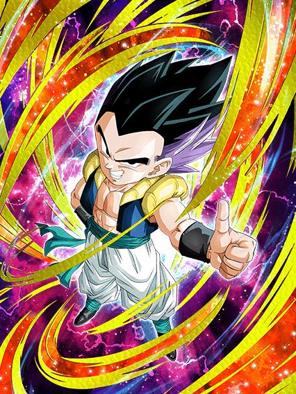
Heavenly events.
Esse card é bem decente se o time todo for heavenly events já q ele ganha 70% de chance de desvio no slot 1 e tem um dano, defesa e crítico decentes, nada muito além disso

Provavelmente uma das coisas mais bizarras que aconteceu esse ano, onde aleatoriamente a comunidade acordou e o super 17 pegou top grossing em Macau (onde fica isso mesmo?)
É meio óbvio que a rapaziada devia estar se preparando pro aniversário e comprou um monte de dragon stone, mas ainda sim foi estranho e muito engraçado ganhar 7 ds pq um canto aleatório do mundo gastou na celebração do super 17.
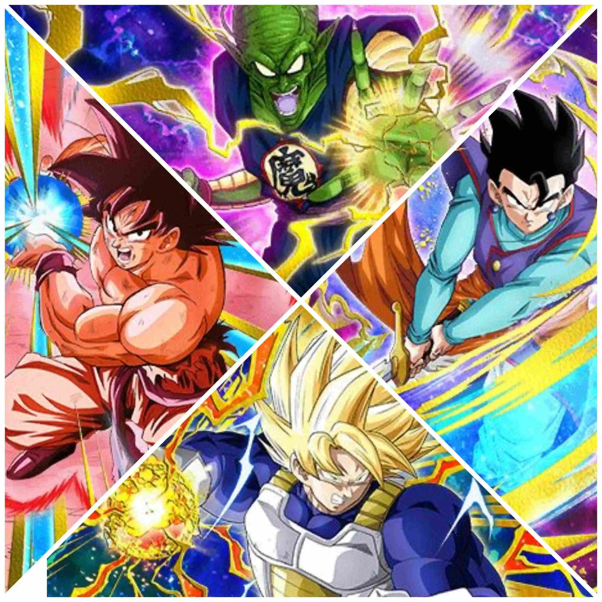
Oh não, mid.
Genial cara, os primeiros ezas foram incríveis.. e agr tem isso aq
O piccolo daimaoh é interessante pelo menos, tem redução de dano, suporte pra sworn enemies q é um time morto, até q não é muito ruim não
O goku kaioken seria bom mas "50% de chance de defesa ativa com 3 orbs rainbow" 💀
Vamos apenas fingir que o gohan e o goku ssj não existem, ok?

Grande aniversário.
Essa foi uma celebração interessante, já que no jp ela veio logo depois da celebração do superhero que deixou geral sem DSs, mas que ainda sim conseguiu ser boa.
Apesar de ter muita coisa boa, essa é discutida como uma das celebrações menos hype de todas, onde os cards principais são bons mas não tão hype quanto outros, e junto com uma coisa dita numa live do jp sobre a celebração q dizia que tudo até o décimo aniversário já está planejado e que o oitavo teria cards que nunca foram principais antes (oq excluiria goku, vegeta, fusões e etc), mas que acabou não sendo verdade e eles só disseram q falaram errado sem querer.. enfim, o omatsu sendo omatsu
Grandes GT boys.
Um card q no lançamento já era considerado por muitos o n.1 do jogo ou pelo menos top 2, e tem belos motivos pra isso.
Esse card tem literalmente o mesmo kit dos Z boys, só q o oposto, já que ambos tem:
Mas eles ficaram com o lado melhor da moeda, já que eles stackam ataque ao invés de defesa, oq transforma eles em semi-nukers já que caso vc pegue um triplo super várias vezes, eles ganham ataque muito rápido.
(opinião pessoal: esse card não gosta muito de dar 3 supers pra mim ou pro goresh, oq é triste)
E falando do triplo, é bom q vc pegue pq vc talvez se lasque caso n consiga, já que os 50% q eles buildam é de redução de dano, e a defesa deles não é exatamente o ápice do jogo
Claro, pós-supers eles ficam com uns 400k tranquilo, mas ainda sim, deixe o card bem longe do slot 1 pq o 100% de defesa a mais não é muito pra eles, mas caso vc deixe (maluco), como eles stackam ATK, os 100% de ATK q vc ganharia no slot 2 e 3 não fazem tanta falta.
No geral um card balanceado (ou não né) onde o turno mais perigoso deles é o 1 e depois nunca mais, tem link skills decentes, mas não tão boas pela falta de saiyan roar, a leader skill é muito boa, entram em um monte de time, animações bonitas, típico card de aniversário mesmo
Até aí tranquilo, mas quando vc receber pelo menos 4 ataques ou cair abaixo de 50% de HP literalmente a qualquer momento, o jogo muda.
O standby:
")
O segundo standby mais quebrado do jogo.
Esse até o momento (setembro 2023) é o único card standby que ataca e eu acho bem justo q outros não fazem isso.
A proposta aqui é bem simples, esse card dá dano, mas muito dano mesmo. Eles tem 330% de ATK bruto, em cima de tudo q vc stackou antes de usar a standby, e fica mais absurdo quando ele aumenta mais em 50% no super
Parte dos 330% mencionados acima vem do mais quebrado e absurdo suporte do jogo, onde o vegeta dá simplesmente 8 de ki e 80% de ATK pra TODO MUNDO, o cara não tem nem uma restriçãozinha de classe, só vai 80% e cabou
Acho q eu nem preciso falar do quão quebrado é esse suporte, não só ele resolve o problema do fraudehan (parabens, "beast"), mas tmb deixa qualquer nuker tipo o gohan agl mais quebrado ainda, sem contar q esse vegeta linka bem com a standby dos Z boys, deixando a genki dama deles ainda mais absurda.
Agora q eu já falei sobre o quão bom é o suporte 69 vezes, só falar sobre o real propósito do card q é morrer.
O card dá um dano absurdo mas não tem defesa e vai morrer pra qualquer coisa, oq vai ativar o revive-counter que vai dar ainda mais dano e curar 100% da vida, oq é totalmente balanceado e nem um pouco injusto, já que pós revive vc volta pro card normal como se nada tivesse acontecido e continua com seus 50% de redução de dano
Vale mencionar que não é interessante largar ele no slot 1 pra morrer de propósito já q ele aumenta o ATK em 50% no ultra e isso contra pra genki dama, então é melhor deixar no slot 2 ou 3 ou deixar pra usar a standby quando tiverem muitos ataques em um lugar só.
...pq?
Qual era o objetivo desse card?
Buffar GT bosses? Não
Ajudar os GT boys? Tmb não
Ser útil em alguma fase? Impossível.
Basicamente eles são orb changer mas tem o problema horrível de ser orb changer e precisar dos próprios orbs que eles criam, ou seja, vc deveria colocar eles no slot 1 mas não tem como pq eles são horríveis 💀
Em resumo, vc deveria pegar 7 orbs com eles mas vc não vai pq eles são horríveis.
Já falei das 3 CATEGORIAS q eles tem?
O card que não sabe se vence ou não as alegações de fraude.
Diferente dos GT boys que já foram logo considerados top 2 no lançamento, os Z boys ficaram um pouco pra trás, estando ali no top 5, e tem motivo pra isso tmb
Esse card tem o kit igual ao dos GT boys, só q o oposto deles
A grande diferença é que os Z boys ficaram com o lado pior da moeda, oq ferrou demais eles e dificultou muito mais a situação do card.
Sendo o oposto dos GT boys, eles stackam DEF ao invés de ATK, oq é maravilhoso, certo? Afinal de contas eles podem dar até 3 supers sem o hidden potential e stackam muito rápido, mas aí q tá, não tão rápido assim.
O maior problema tá na outra habilidade deles, já q por algum motivo bizarro o dokkan considera redução de dano e crítico coisas iguais, e já que os GT boys ficaram com a redução de dano...
No geral oq mais quebrou o card foi isso, eles não terem nenhuma habilidade defensiva a mais além de defesa bruta
Tipo legal, eles chegam em 1 milhão de defesa fácil em alguns turnos, mas esses "alguns" podem demorar até demais, e talvez vc não chegue lá já q por terem só defesa, se vc for pego por um super attack brabão vc vai de lojas americanas fácil
E claro, eles podem até lançar no máximo 4 supers todos com 50% de crítico, mas como eles não stackam ATK, eles talvez não quebrem tanto expectativas, apesar de eles sim incinerarem qualquer boss int como se fosse nada.
Então tá, eles não tem nada pra ajudar a defesa deles na base certo? Bom, se vc atacar 4 vezes ou cair abaixo de 50% de HP..

O provável standby mais quebrado do jogo.
No que eles pecam na defesa na base, eles compensam totalmente aqui
O vegeta não ataca, mas ele é praticamente invencível, já q ele tem 250% de defesa, defesa ativa e 8% de redução de dano por orb pego, onde se vc pegar 13 orbs, vc tem 104% de redução de dano e absolutamente nada no jogo consegue encostar mais no vegeta (pode até ser quase impossível sem a bulma LR ou itens mas se vc pegar 23 orbs vc vai ter 184% de redução de dano oq é só um pouquinho alto)
E claro, tudo isso em cima da defesa q vc stackou antes, então eu acho q eu não preciso explicar mais, o vegeta é invencível e é isso.
Sobre a standby em si, vc acumula energia pegando orbs, e se vc pegar 38 ou menos vai ver uma animação muito linda mas não é oq vc realmente quer então é meio q um disperdicio de animação mas enfim
Com 39 orbs OU MAIS vc ativa a super genki dama q vai pegar os 500% de ATK q vem na passiva do vegeta e juntar com mais 780% (isso com 39 orbs), super balanceado
É meio óbvio mas vc pode sim supercarregar a genki dama e aumentar seu ATK em 1360% e tals, com ajuda da bulma LR fica até bem fácil fazer isso
Eu não preciso nem dizer q a genki dama supercarregada com crítico é provavelmente um dos maiores se não o ataque mais forte do jogo, já que praticamente nada sobrevive a um ataque assim.
A única falha do vegeta é o fato dos 50% de crítico na forma base deles não passa pro standby e por isso a pessoa precisa colocar crítico no hidden potential pra critar a genki dama, já q ela sem crítico com desvantagem de cor é praticamente uma cócega nos bosses.
Eles stackam.
Esse é um daqueles cards bizarros que não ajuda o card principal em nada e é do tipo ainda mais estranho de ter um super de 11 de Ki e outro com 12
Eles stackam ATK no super de 11 e DEF no de 12, oq é decente se eles tivessem stats bons e uma passiva que não tivesse 50% de ativar tudo
Eles curam vida por rainbow orb pq sim e tem 50% de chance de dar um super adicional, uau que personagem incrível
No geral um card inútil que só serve pra passar raiva quando vc pega um featured no banner e são eles 💀

Realmente a fusão entre o irmão do raditz e o parceiro do raditz.
Esse eza foi.. algo
Algo que concerteza não prestaram atenção fazendo.
Esse vegetto era um dos cards mais antigos que precisava de eza e decidiram finalmente dar o buff q ele precisava.. só que passaram um pouquinho longe
Esse card é literalmente um tank de ataques normais e.... é só isso mesmo, ele não faz mais nada
O gênio incompreendido na akatsuki decidiu que seria hilário se o vegetto tivesse 80% de redução de dano mas só pra ataques normais e mais nada, fazendo ele morrer pra qualquer super pq a defesa dele é horrível
Mas claro, assim como todos os outros 5904 personagens recentes, ele builda recebendo ataque, acho q só é difícil saber oq exatamente ele builda
Ele precisa de um total de 6 ataques pra buildar o ATK dele (q não existe então não faz diferença nenhuma) e 9 ataques pra ganhar mais ki, mais defesa (q não serve pra nada) e 30% de chance de crítico q junta com os outros 30% q ele tem de base, o problema desse crítico é que de novo, o vegetto não consegue dar dano, então não adianta ele critar.
Foi triste oq fizeram com esse card, tipo beleza, ele é um personagem invencível contra ataques normais e tem counters, mas não adianta já que ele no turno 1 tem genuinamente nenhum ATK na passiva e mesmo buildado os counters dele não chegam nem a 1 milhão de dano, sendo q o vegetto str de 2020 dá quase o triplo disso
Infelizmente ele é apenas um card meme que ficou conhecido por geral como imã de super attack (ou super magnetto) por estranhamente sempre levar supers e morrer já que ele não consegue tankar.
")
Um rapaz de muitas faces.
Bom, esse cara tem transformações demais então irei ser breve
Na forma base ele n tem nada demais, alguns buffs aqui e ali e ganha um pouco mais de defesa levando um golpe antes de atacar
Esse cara só fica interessante quando chegar no turno 5, onde ele vai absorver alguém de acordo com seu HP
Se seu HP estiver abaixo de 49%, ele vai absorver o Piccolo
Se estiver entre 50% e 79%, ele vai absorver o Gotenks
E se estiver acima de 80% e ABAIXO de 100%, ele absorve o Gohan (essa é uma informação que usaremos mais tarde)
Começando pelo buutenks
")
Bom esse cara é o pior dos 3, ele não faz nada de especial e só tem números brutos, única coisa é ele ter 70% de chance de lançar um super adicional por 6 turnos, realmente um card.
")
Tank insano.
Esse cara é um suporte, aumenta 100% DEF por super no turno, tem 50% de redução de dano e cura muita vida
Não é a transformação mais insana mas pô, muito bom
Noq eles realmente querem q vc se transforme.
Bom esse cara é obviamente o mais forte, tem 70% de chance de defesa ativa mas já tem defesa pra caramba, dano muito alto, cura vida, o cara tem tudo q precisa
Mas uma PEQUENA inconveniencia, é q a forma q eu descrevi as condições no começo é exatamente como tá escrita no jogo, ou seja, ele só absorve o gohan se estiver ABAIXO de 100% de HP, e olha, o time majin power cura bastante vida com as links e etc, então É BEM PROVÁVEL que vc vai chegar no turno 5 com a vida cheia, e isso simplesmente buga o super buu e ele não absorve ninguém
E é literalmente isso, ele só tem a chance de absorver naquele turno e se nada acontecer, vc vai ficar na forma base com ele pra sempre
Obrigado akatsuki pelas correções de bugs estúpidos 👍

EU AMO esse card.
A intro desse card é tão calma e passa uma tranquilidade que rapaz, ele é muito bom.
As animações dele podem até não ser as melhores mas elas são muito boas, e a estética do card é boa, pena q ele é o segundo goku base do ano e já tá dando problema.
No geral o goku é um tank, tem defesa ativa por 6 turnos e stacka defesa no ultra super attack
Ele tmb tem a habilidade bizarra do yajirobe de sobreviver ataques q te matariam, oq é interessante em situações específicas onde vc não morra por 2 dígitos
Pra completar a habilidade defensiva ele tmb te cura 59% de HP quando estiver abaixo disso, oq é um semi-revive dependendo do turno, então maneiro.
O goku tmb tem 50% de counterar supers de ki, oq é um extra ali basicamente
Ele tmb ganha ki e chance de crítico por ataques tomados, e falando em tomar ataques..
O goku precisa tomar muitos ataques, mas infelizmente é bastante mesmo, já que com 5 ele ganha mais defesa, q é bem importante, mas tomar 9 ataques pra ganhar 120% de ATK é um pouquinho demais na minha opinião
Tipo, o salto do valor de ataque dele é absurdo, ele vai de 5 ou 6 milhões pra 13 milhões, é bem alto e junto com o crítico, facilita, mas pelo fato das lutas serem bem curtas e o goku levar um tempo pra ganhar defesa, jogar ele no slot 1 pra acelerar a buildagem é uma péssima ideia, especialmente quando os eventos recentes te dão um super turno 1 slot 1 e te deixam no chão
Esse é o maior e único problema do goku, tomar ataques até demais pra buildar, mas eu gosto dele, não é um card ruim, então é justo q ele não seja perfeito.
E ele tem uma active q parece q foi feita de última hora, mas boa, críticozinho garantido e um dano legal, mas um negócio é q usar a active depois de ganhar o buff de ATK daria mais dano mas é meio impossível pelo problema citado então, é.
É um personagem q tanka bem mas falta um parceiro.
O gohan é baseado na opening do Z e tem animações bem nostálgicas, além de ter osts lindas, tipo, a ideia de basear cards em openings é muito boa.
Mas assim, não questione o pq da celebração genial de genki damas ter um gohan q não tem nada da genki dama no card
Falando sobre o card, ele vira um tank muito rápido pq ele builda DEF e ki tomando 8 ataques e stacka ATK e DEF no ultra super attack
Ele tmb tem um buff de intro q dá mais defesa por 4 turnos, oq tmb é muito bom.
O dano dele é maneiro mas leva tempo pra realmente ficar brabo já q além do stack ele precisa levar 5 ataques pra ganhar 58% de ATK.
Ele tmb fica efetivo contra tudo na active então é, dano não falta com certeza
No geral o principal bônus desse card mas tmb um problema é o fato de ele precisar de um goku ou um piccolo pra ativar o unit super do gohan e ele stackar 50% de ATK e 30% de DEF, mas isso ferra pq gokus slot 1 são poucos e piccolos pior ainda (o melhor q tem seria o piccolo int LR do world tournament q é bom sim com esse gohan)
Enfim, um card bom em geral q consegue stackar rápido se manter tranquilo pela partida, só precisa de parceiros de link melhores..
Eu quando o personagem nuker é nerfado por ser "forte demais"
Esse cara tem um dano maneiro, é orb changer e no geral decente, mas tem q ter um monte de super saiyans só pra ter um dano bom e ele ganha redução de dano por rainbow orb, mas.. só?
Se fosse orb agl também, ajudaria tanto a tankar mais tranquilo, mas é, de novo eles zuaram o personagem achando q ele ficaria forte demais, triste.
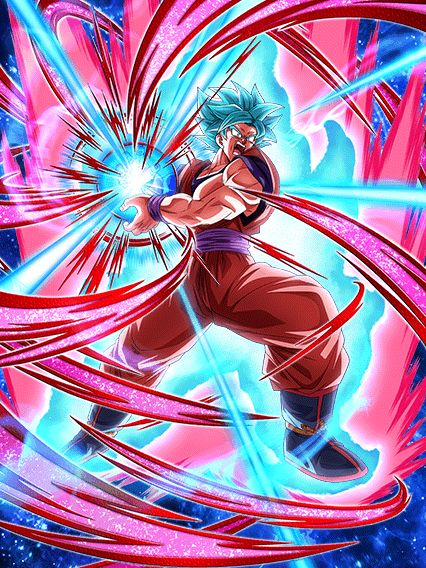
O único card decente de universe survival saga do ano? 💀
Eu juro que era pra ser uma piada, mas realmente parece q eles vão no cara ou coroa pra decidir se o eza é bom ou não, felizmente esse cara é bom
Na vdd ele seria se USS fosse um time, já que usar qualquer outro card do time já te deixa em total desvantagem (o goku mui até vai, mas só ele não é o bastante)
Esse goku era um personagem q dava muito dano, pós-eza ele é O personagem que dá muito dano, com uma defesa minimamente decente considerando oq ele faz
O goku sempre stackou 50% de ATK por super, oq por si só já é quebrado, mas ele stackar isso com stats de eza faz cada stack ser muito absurdo e ele chegar fácil em valores altos demais
O grande bônus dele é que caso tenha 1 aliado USS ele ganha defesa ativa por 5 turnos, oq ajuda ele nos turnos iniciais já que ele builda um pouco de DEF tomando ataques
No geral foi só isso que adicionaram no eza dele que realmente fez diferença, ajudou muito o card a sobreviver e stackar pra usar.. a genki dama das genki damas
Créditos a imagem: Hannaee9
Infelizmente condições de active não mudam com eza, oq faz essa active ser difícil de ativar já q ele precisa ter 3 personagens representatives of universe 7 no time e estar abaixo de 59% de HP, mas tenha noção de q se vc stackar legal, pegar uns adicionais e pegar um crítico maneiro, essa genki dama é o ataque mais forte do jogo inteiro, e ela ainda buffa os aliados, quem achou que isso era balanceado?
Infelizmente pro goku, nesse ano não teve ninguém pra ajudar ele (eu não vou mencionar a kale), então ele tá meio sozinho por agora e isso não ajuda, já q com um time fraco sua defesa ativa acaba rápido e aí vc fica vulnerável já q não espere muito da defesa dele..

50% de chance de reviver.
Esse cara é lotado de 50% de coisas acontecerem, mas tipo.. 50% de chance de debuffar inimigos???
E outros 50% de chance de lançar um adicional caso o inimigo esteja debuffado..
No geral é só um card meio fraco que não faz muita coisa útil, pelo menos o revive dele, mesmo que muito difícil de pegar, é engraçado.

Card brabo, estranho e desperdiçado ao mesmo tempo.
Bom, o babidi ganhou outro LR de algum jeito, mas esse é decente
Ele é simples, é um suporte pra extreme em geral e tem 50% de desvio caso tenha um inimigo super class, acho q é isso q ele faz resumido
No geral ele não é muito doido, o kit dele não é nada mal pra um f2p e as animações dele são mehhh
Agora, a partir do turno 4 ele pode ativar a mecânica nova do aniversário (pq tem q ter um f2p com mecânica nova obrigatório)
Como esse momento incrível do vegeta veio parar num f2p?
Bom, o vegeta infelizmente possui sérios problemas
Ele não ataca na standy similar aos Z boys, mas o problema é q ele tenta ser um tank, mas n consegue
Parte disso é pelo fato de que apesar de ele não poder atacar, ele precisa de bastante ki, e isso é difícil pq quase todos os links do babidi mudam pra links saiyajins na standby, oq ferra os parceiros de link do card
E a outra parte é óbvia, ele é um f2p, não dá pra esperar um deus de um card gratuito
Claro, se vc pegar bastante ki ele é decente sim, e a standby dele é de acumular ki então é normal q vc pegue bastante, só fica ligado q apesar de ele precisar de ki, nem orb changer ele é ein kkkj 💀
E sobre as finish skills, as 2 dão o mesmo dano q uma barra de sabão no fim da vida, o vegeta acaba sendo mais útil como um "tank", doq realmente um nuker dos nukers q dá muito dano
No geral, óbvio q é um card de aniversário, ent podia ser melhor, mas não dá pra reclamar de um majin vegeta e as 3 osts desse card são insanas, a finish 2 em específico parece q veio de Doom, muito doido.


Cozinhar é pouco pra descrever oq fizeram com esses cards.
Eles decidiram fechar com chave de ouro o aniversário com os melhores ezas que existem, não é a toa q o quinto aniversario foi um dos mais hype, se não o mais hype de todos os outros
Enfim, na forma base e na maioria da passiva transformada tmb, o gogeta e vegetto tem o mesmo kit, no caso da forma base os dois literalmente são iguais, e se resumem a:
A defesa deles pré-super e bem mid, mas pós supers eles tão de boa já q eles ganham bastante nos supers e ganham 100% a mais quando atacarem.
Bom, o gogeta e vegetto literalmente querem ser usados como irmãozinhos, sabe, se vc leva um, vc leva o outro pra não deixar um sozinho, mas isso não é a melhor das ideias já q uma rotação dos dois na forma base pode resultar em morte especialmente pré-super, mas depois de dar super eles conseguem pelo menos tankar os autoattack dos bosses brabos (ou a maioria pelo menos)
Enfim, diferente de outros cards eles tem a condição simples de automaticamente transformar a partir do turno 4.
Começando pelo gogeta:

Crítico.
Os cards literalmente se tornam deuses do jogo já que pegaram tudo q tem de melhor e colocaram neles
O gogeta tem desvio garantido no turno onde ele se transformar, oq não é nem um pouco justo já que vc se torna imune a tudo a não ser q o boss cancele desvio, oq por si só já faz do card um top tier
Ele lança 2 adicionais com 30% de chance de serem supers oq não é das melhores mas tá ali
Ele tmb tem crítico garantido quando vc estiver com 24 de ki, e considerando q o gogeta ganha 7 de ki quando for atacar, fica mais fácil doq parece
E o aspecto mais importante das fusões é que a build dos dois foi acelerada mil vezes, já que agora, ao invés de buildar 77% de ATK e DEF fazendo 11 ataques (literalmente impossível por sinal), agora ele builda 88% de ATK e DEF com só 4 ataques, e a parte mais divertida é só serem ataques e não supers, e tmb o fato de q se vc pegar o adicional do hidden potential, o gogeta vai atacar 4 vezes já e ficar buildado pro resto da partida, coisa boa ein
Esses 88% dão uma diferença boa no dano, já q o salto nos números é alto e tem o crítico garantido por cima tmb
O grande problema do gogeta é que a defesa dele é boa pós buildar e pós super mas, se vc não pegar nenhum super adicional, dependendo do evento isso pode te custar a partida toda, já que o gogeta não tem defesa ativa ou redução de dano
O que ele tem defensivamente é que no slot 3 ele tem 70% de desvio e um super adicional garantido, oq dependendo da situação pode vir a calhar de ser útil então, fica ligado.
Apesar de ter uma certa falha na defesa, o Gogeta segue a regra de "a melhor defesa é o melhor ataque", e quando o oponente estiver abaixo de 50% de HP, vc pode usar A active q literalmente destrói qualquer coisa
A active com a build completa vai dar um crítico garantido lindão no oponente, e agora, eles tornaram esse eza ainda mais especial dando pro gogeta e pro vegetto novas OSTs nas actives, e ambas são…incríveis apenas.
Mas claro q não para por aí.. já que esses 2 manos foram os criadores praticamente do god-mode, já que eles tem um que agora é absurdo
Os buffs de slot das fusões ativam quando eles atacam, e como a active é um ataque.. já sabe né?
Se tudo mencionado acima não foi o bastante, agora vc tem 70% de chance de desvio, pelo menos 2 supers garantidos (se vc der muita sorte podem ser 5), todos críticos e considerando q a active em si já dá um dano do caramba, o resultado fica óbvio.
E agora, o vegetto (my goat):
Adicionais.
Do mesmo jeito q o gogeta, o vegetto tmb ganha desvio garantido no turno da transformação e builda 88% de ATK e DEF com 4 ataques, só que aí vem o grande diferencial do rapaz..
O vegetto não é efetivo ou tem crítico garantido, mas sabe oq ele tem? Exatamente, isto, adicionais. Bastante adicionais.
O vegetto tem o seguinte:
Não só é quase garantido q o vegetto vai estar buildado na primeira aparição garantido, mas ele tem uma vantagem muito maior q coloca ele 1 pouquinho acima do gogeta
Ambas fusões aumentam 50% de ATK e DEF por 1 turno nos supers, e aí vc já entende o raciocínio quando percebe q enquanto o gogeta pode dar 4 supers com muita sorte, o vegetto pode dar 4 sem dificuldades e um quinto a mais, tem noção de quanta defesa é isso?
O vegetto pós supers facilmente tá acima de 1 milhão de defesa, isso já ótimo pra tankar quase tudo sem precisar do desvio, além do dano absurdo claro, e se vc usar o cérebro decentemente e colocar todo o crítico do universo nele, tem a chance de ele simplesmente critar em 5 supers seguidos de graça, diferente do gogeta q só pode fazer isso no god-mode dele
E falando sobre o god-mode, o buff q o gogeta ganha no slot 3 é o mesmo do vegetto, ou seja, dá pra colocar outro super adicional na lista, totalizando 6 SUPERS e 70% de desvio, e de novo, o vegetto pode não ter crítico garantido, mas o hidden potential totalizado compensa demais, é muito crítico véi
Bom, em resumo, os dois são completamente insanos é desbalanceados, caso vc use os 2 juntos em blue, praticamente nada sobrevive a eles caso vc use as actives só pelo dano e juntando com o desvio vc tem um card q não obrigatoriamente precisa de defesa ativa ou 50% de redução de dano pra ser bom.
Os dois tão sempre por aí, ainda no top 10 LRs e seguem assim, já q o valor q eles tem num time é muito alto pela utilidade e dano.

Fato: Ninguém se importa com isso.
Se a celebração do Yamcha, estando entre o dia dos saiyajins e a golden week já teve pouca gente fazendo summon, imagine uma celebração entre o ANIVERSÁRIO e a CELEBRAÇÃO DE DOWNLOAD
Só tristeza por aqui.
")
Parabéns ao dokkan por criar o primeiro card com uma leader skill pra ninguém 🔥
Sério, parece q pegaram esse card, botaram numa caixa e abandonaram num canto aleatório, a kale tá literalmente sozinha, é um card solitário
Vamo lá, a kale precisa muito (é praticamente obrigatório) de pelo menos 1 aliado do universo 6, se não ela não tem metade do kit, e isso é impossível
E antes de prosseguir com o kit, é obrigatório mencionar que a kale tem facilmente as PIORES animações pra um dokkan fest, chega a ser ridículo o quão ruins elas são
Continuando, sem um aliado universo 6 a kale perde um adicional de 70% de ser um super e como ela também perde 160% de ATK e DEF e não ganha defesa no super, ela vai ficar super frágil e vc vai ser varrido se usar ela fora do próprio time, além de que nesses supers vc ganha 20% de redução de dano, então se vc fizer só 1, não vai adiantar de nada
E eu não sei se é perceptível ainda mas não tem nenhum do universo 6 card 100% decente pra ajudar a kale, oq deixa ela sozinha em um time com um monte de personagens q não foram feitos pros eventos recentes
Claro, tem exceções, tipo a caulifla teq, ela realmente é muito boa, mas só pelo desvio mesmo, já q ela não faz mais nada
Falando da caulifla, é bom q vc tenha uma no time, já q assim vc pode transformar a kale no turno 4 ao invés do 6 dando super attack (isso se ela der pelo menos 2 supers por turno)
A kale transformada tem pelo menos a ofensiva no máximo, mas é basicamente só isso já q ela tem 50% de chance de defesa ativa e perde 160% de DEF sem um universo 6 no time
Quando ela estiver com um aliado a defesa ativa fica garantida oq já melhora o card já q ela pode lançar 4 supers e agora ela ganha defesa no super então ela vira um tank real.
Mas no geral, mesmo sem um aliado ela é muito melhor transformada já q ela consegue lançar os adicionais dela e se as estrelas se alinharem vc pega a defesa ativa q ajuda
Mas é isso, a kale seria um card top 5 ou 6 fácil se não fosse por ela ser completamente restringida pelo time horrível dela, e infelizmente o time não vai ganhar buffs o suficiente antes que q ela comece a envelhecer..
(Atualização 2024: ela ganhou buffs antes de envelhecer, desbloqueamos o good ending)
Existem cards ruins, existem cards MUITO ruins, existe o raditz phy, e então existe essa desgraça aqui.
Esse card é completamente inútil, eles não tem defesa boa e só dão um dano q é miserável se o inimigo tiver com debuffs, nem as animações desse card são boas, nem os links, e pra completar, nem a kale esse card ajuda, ele realmente não serve pra nada.
Eles se seguraram muito aqui.
Esse já foi um dos cards mais quebrados do jogo, e infelizmente elas não voltaram ao trono
Elas tem o problema igual aos Z boys, stackam muita defesa mas não tem uma redução de dano ou defesa ativa pra ajudar elas, apesar de elas buildarem uma chance maneira de desvio a cada ataque feito, mas do mesmo jeito q os Z boys, se elas tomarem um super logo no começo vc vai de comes e bebes.
No geral até foi um eza decente e elas ajudam a kale, mas não adianta um time de 7 personagens ter só 3 bons e a kale e caulifla tem suas dificuldades no começo da partida.

Bom, esse cara foi promovido de card de world tournament pra.. card de world tournament de novo.
Sei lá, eu gosto desse card mas ele é completamente inútil se não tiver uns 5 inimigos, ele stacka em ambos supers mas não tem stats bons e no geral ele não tem nada de muito útil
Além de q, pô, ele lança um super adicional garantido se tiverem 6 inimigos ou mais, onde vc vai achar isso sem ser no world tournament?

Provavelmente uma das celebrações mais importantes na história do jogo.
Uma celebração extremamente hypada pelo fato de a comunidade estar esperando por uma celebração future saga digna, e ela realmente veio
O potencial pra ezas e etc nessa celebração já era insano, mas uma coisinha q ninguém estava esperando é o anúncio de q o global e o jp finalmente iriam se unir permanentemente depois de 8 anos de jogo, oq deixou todo mundo muito doido.
ELE VOLTOU LETS GOOOOOOOOOOOOOOOOOOOOOOOO
Geral comentou se teria um rap esse ano ou se foi algo exclusivo do cooler, e eu agradeço muito por esse não ter sido o caso
Não tem como irmão, o cara fez um rap das fusões potara e ficou genial, além de ter basicamente confirmado que raps com o tema da celebracão vão ser recorrentes e pelo jeito, só vão melhorar
Só queria meter uma experiência própria aqui: assistir o dokkan now do global com as novidades e imediatamente ir pra live do jp pra ver se tinha um rap e realmente ver q tinha foi muito especial
Obrigado ao artista pelo conhecimento desbalanceado e por grudar outra música em japonês na minha mente.
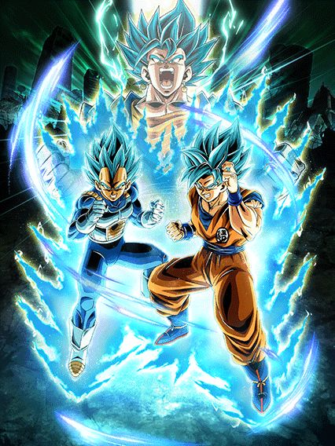
Veja como massacraram meus garotos.
Ficamos 3 anos, mais de 1000 dias sem um novo vegetto no jogo pra ele ser travado por uma active horrível.
Enquanto o zamasu tem todo o ataque do mundo e a defesa braba, esse card tem.. alguma coisa que eles acharam q era bom
Deixa eu ser bem explicativo, digamos que você está ali no turno 1, contra um inimigo que não é realm of gods e vc coloca seu goku e vegeta novinhos no slot 1
Eles tem 100% de ATK total da passiva inteira.
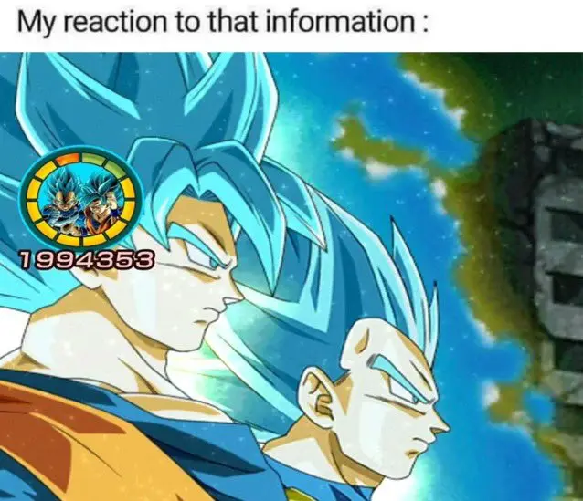
Tipo, sabe? Simplesmente, ????
Temos um LR dokkan fest de 2023 na ferrando celebração de downloads do jogo e é isso q o personagem tem de dano potencial.
"Ah mas eles stackam"
Amigo, entenda, 80 quintilhões x0 continua sendo 0
Não adianta stackar se mesmo stackando vc não vai chegar a nenhum valor bom
Mas tudo bem, já que isso só ocorre com eles no slot 1, onde eles tem mais defesa e 50% de desvio, uau que personagem incrível
Já no slot 2 eles tem mais ATK, só que agora a defesa deles máxima é 150% 🔥🔥
E claro, eles tem uma intro (facilmente a mais feia do jogo, animações no nível da kale) e defesa ativa, ou seja, eles estão perfeitamente bem né?
Bom boa sorte já q ela dura 4 turnos, pq depois disso amigo, vc vai ver a telinha de game over se for contra um boss teq.
Bom, aqui estamos né, vamos falar da active horrível deles
Só cair abaixo de 70% de HP 5 turnos depois de eles aparecerem, muito fácil já q eles tomam dano para catapimbas sem o desvio carregar eles nas costas.
Sendo honesto, essa é uma das piores condições possíveis, chega a ser ridículo
E aí sim, vem o vegetto.

O Mr. Dokkan Original em pessoa.
Caso vc consiga de algum jeito chegar nas condições vivo e usar a active, vc vai ter um card bom pelo menos
E ele fica de fato bom, é efetivo contra tudo pra sempre e pode lançar até 4 supers se estiver no slot 2, oq ajuda ele a ter uma defesa decente no geral
Um problema desse card é a “mecânica da pan”, onde ele tem 30% de redução de dano, mas só antes de atacar, e ele ganha mais 20% se estiver no slot 1, oq, se vc perceber, significa q ele fica sem nenhuma redução no slot 2 ou 3, oq faz dele bem frágil já q a chance de ele dar tantos supers não é garantida.
Pra ajudar nessa situação ele tem uma active q dá um dano horrível mas q deixa ele com desvio garantido no turno, e tmb permite q vc possa dar 5 supers oq ajuda tmb (vale avisar que se vc ir num evento q nulifica desvio e usar a active, ela conta como um ataque e vc perde 30% de redução de dano 💀)
No geral ele é bom, poderia ser melhor, mas é bom
Mas eu devo falar que os supers desse card todo (tirando o ultra) são horrivelmente feios, e isso é triste.
")
Dê dois supers ou vc morre: o card
Acho q a frase acima resume bem o card, já q a mai se resume a isso
Não é um card de dar dano, ela só é um suporte muito bom de 50% de ATK e DEF e 10% de crítico pra geral mas é só isso.
A mai tem 20% de redução de dano e quando vc der outro super, a redução aumenta pra 50% no turno (oq eu quis dizer é q a redução total ativa sempre q vc der 2 supers, então se em um turno vc der um super apenas e no turno seguinte der outro, a redução ativa nesse turno, e então reseta e começa de novo)
Ela pelo menos tem 30% de chance de dar um super adicional, mas se nem esse ativar, nem o hidden potential, dependendo do boss vc vai de base e acabou.
Eu não diria q é um card ruim, ela é decente, só q dá pra morrer fácil por causa dela infelizmente.
O melhor extreme do jogo.
Assim como o vegetto, o zamasu tem uma leader skill bem abrangente, pegando praticamente todos os vilões do futuro, fusões e até realm of gods oq é bem doido, além de ter a nova leader skill de 150% pra uma class (no caso dele, extreme)
E honestamente o kit dele é fácil de resumir, ele tem O dano e mais doq a defesa necessária
A intro dele é muito linda, curta e fácil de pegar, só precisa de 1 realm of gods q é oq vc quer no time de qualquer jeito, e com ela vc é invencível no turno 1
Depois do turno 1 vc ainda vai ter 60% de redução de dano oq é totalmente balanceado e tomando 6 ataques vc builda 150% de ATK a mais, e sendo essa parede inquebrável, fica fácil demais
E aí pra completar, nem de cópia vc precisa, já q no kit ele tem 50% de crítico e tmb 50% de chance de super adicional, e quanto mais supers, maior a sua defesa, deixando vc ainda mais tank
Ele completa tendo a mesma mecânica do birdku de ganhar defesa a mais quando leva um ataque, só q uma versão buffada onde se vc estiver com menos de 70% de HP vc ganha 100% de DEF a mais pq sim
Em resumo, o zamasu era pra ser um canhão de vidro, só q esqueceram do vidro nele
Primeiro turno ele não leva dano e no próximo ele ainda não leva
E depois segue com 40% de redução de dano pra sempre enquanto dá supers de 15 milhões sem cópias como se fosse normal
Daí vc se pergunta “como se mata esse personagem?”
Se vc cair abaixo de 70% de HP depois do turno 5 ou no turno 7 com um aliado ou inimigo future saga, infelizmente vc não vai ter uma resposta, pq fica pior

Se você realmente não gosta nem de tomar 2 digitos de dano, pronto, agora vc não toma mais nenhum.
O zamasu literalmente se torna o card q dá dano, já q ele recebe 0 de dano de tudo no jogo enquanto dá supers de 10 milhões em área e linkando perfeitamente com outros zamasus
Isso enquanto ele se torna orb changer e suporte de 60% de defesa pra worldwide chaos, pra buffar ainda quem precisar
E é claro, ele tem a nova mecânica de domínio onde ele diz “expansão de domínio” e domina o universo inteiro
Sendo o primeiro card com a mecânica, o zamasu já tem uma interessante q aumenta o dano recebido pra inimigos E aliados q sejam super class, oq já é interessante e vai servir de base pra domínios muito mais quebrados no futuro.
Enfim, o zamasu é provavelmente o melhor card do jogo se ele receber mais buffs pro time dele, já q ele sozinho realmente leva as próprias palavras a sério, sendo invencível nos primeiros 4 turnos e caso vc precise, usa o domínio e aí não dá mais pra receber dano, muito maneiro.

Eu não sei oq eles estavam cozinhando, e honestamente eu tenho medo.
Oq aconteceu com esse card?
O zamasu começa tendo 75% do kit dele só disponível se tiver um inimigo super class, e tem realmente muita coisa
Vendo assim vc pensa "meu Deus, ele é o destruidor de super class, o dilacerador de bosses heróis, o card perfeito pra qualquer evento q tenha um personagem bom de coração", mas não.
O zamasu tem buffs q levam turnos pra ativar, oq significa q mesmo contra um super class ele não vai ter poder total até o turno 5 ou 6
E ele é um suporte brabo ok? 50% de ATK e DEF e 10% de crítico pra geral future saga, ele seria um parceiro incrível pro zamasu lr, e então eles decidiram q não.
O zamasu tem 50% de desvio mas isso tmb é travado pra só quando for inimigo super class, e a defesa dele não é nada boa. Dá pra juntar tudo q ele pode oferecer e então tirar o suporte q vc vai ter um card inútil
Claro, isso tudo q eu considerei é caso vc esteja contra um inimigo super class, pq caso contrário, o zamasu vai ser ainda pior, sem desvio e sem esperança de vitória pro seu time
É triste, pq a celebracão de downloads é a única celebracão do ano q realmente buffa os vilões e então eles metem essa, é deprimente ver q esse card podia ter sido oq o piccolo str foi ano passado
Pelo menos ele tem uma intro com ost muito boa...
")
Erros foram cometidos.
O eza desse cara e o zamasu agl eram praticamente confirmados assim q a celebração foi anunciada, o problema é q os dois tiveram uma diferença considerável na execução dos ezas.
Diferente do zamasu, o trunks stacka ATK ao invés de DEF e isso se torna um problema bem rápido, já q apesar de ele ganhar 50% de DEF no turno por super, ele não tem nenhuma mecânica defensiva a mais e eu acho q já fiz alguém se matar de tanto falar q defesa bruta não é mais suficiente hoje em dia
Um fato extra: A build antiga de hidden potential do trunks era full crítico pq ele não stackava na base e não tinha crítico em nada, mas o eza deu pra ele uma chance de crítico muito alta q zuou a build de geral de 2019 💀
Enfim, vc só fica na base por 1 turno (q honestamente é o bastante pra te matar mas ok), e transforma automáticamente no próximo
Stack.
O trunks é bem fácil de resumir: Ele stacka 50% de ATK e DEF a cada super, e isso é o mais importante mesmo
Ok entrando em detalhes, o trunks pode lançar até 3 supers assim q transformar e depois de 1 turno pode lançar até 4 (pq isso? Não sabo), além de ele "buildar" 100% de ATK e DEF ao passar de 4 turnos, e pra finalizar tmb builda um suportezinho de ki pra super class
Bom, acho q já foi notável qual o grande problema do trunks, ele precisa stackar e tem muitas coisas pra buildar q ele não tem como acelerar já q é baseado em turnos, além de ele óbviamente não ganhar nada além de defesa bruta transformado tmb
Sim, ele ganha bastante ATK e ainda crita legal mas precisa de alguns turnos e é claro, um pouquinho de sorte com os adicionais pra chegar em uns 1 milhão de defesa mais rápido (vale lembrar q dependendo do boss, nem isso adianta), mas isso depende totalmente do tempo da luta
Em resumo, se a luta deixar vc buildar, então stacke, se não der tempo, ou vc faz o L (vc tmb pode buildar o trunks com desvio se quiser, alllright guys), ou vc pode usar a active dele e rezar.
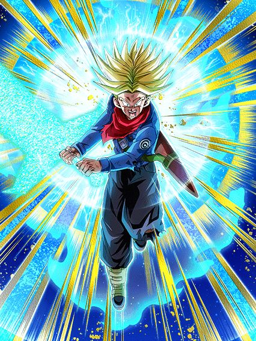
Bom agr vc dá dano.
O trunks vira um nuker, oq é interessante considerando q ele stacka bastante antes de transformar
Só tem alguns problemas..
Pra começar, o trunks não tem nenhum ATK ou DEF de base, é só oq vier das orb q vc pegar
E ele muda orbs pra teq, mas o problema é q ele só muda 1 tipo aleatório e isso pode resultar em ele mudar quase nada ou realmente mudar 1 orb, oq obviamente vai te matar por não ter defesa e vc tmb não vai dar dano
Mas assim, caso vc pegue uma quantidade boa de orbs, o trunks vira um monstro em dano e defesa (de novo, só defesa)
Ele tem crítico garantido sempre e ainda ganha 100% de ATK a mais por super no turno, mas ainda assim, não dá cara, infelizmente essa brincadeira dá ruim.
O trunks é muito bom, mas ele morre fácil pras red zones de só 1 ou 2 fases, ele só não consegue tankar as coisas direito e se vc conseguir usar a active dele e ele não mudar orbs do jeito mais maravilhoso perfeito q existe, toda sua partida vai de base
Se tivessem dado defesa ativa pra ele com alguma condição ou não, ele provavelmente seria o melhor TUR com eza do jogo, mas isso seria quebrado até demais já q nós sabemos bem oq acontece com personagens q stackam 50% com defesa ativa (sim gohan teq, é sobre você).
Deixaram eles cozinharem.
Isso sim é o que chamamos de eza, eles realmente trouxeram o zamasu de volta como um deus do melhor jeito possível
Na forma base ele é bem safe, não muito dano, mas stacka defesa e tem 30% de redução de dano, então ele consegue tankar bem até
Por sinal, ele só fica nessa forma por 1 turno, então pegar um adicional logo no começo é muito bom, dá uma diferença legal
Bom, no turno seguinte ele se transforma

Rapaz ele tá com zap
Eles deram stack de ATK e DEF pra esse cara em cima de 50% de redução de dano, literalmente não tem como dar errado
E realmente não teve.
O mano é o melhor parceiro de link do zamasu LR e os 2 juntos formam uma rotação incrivel, já q o LR é um ótimo tank no começo da partida oq ajuda esse a stackar tranquilo e depois da redução do LR dar uma diminuida vc coloca o dokkan fest no slot 1 pra proteger o outro enquanto vc stacka
É interessante colocar ele no slot 1 pq ele dá um super adicional garantido se ele tomar 1 ataque antes de atacar, oq permite ele dar até 3 supers com o hidden potential, e como ele tem uma defesa boa ele vai virar um tank muito rápido
E quando vc finalmente cansar de stackar..

Bom agr vc dá dano.
O zamasu perde 20% da redução de dano mas vira uma máquina de dano enquanto continua linkando 6/7 links com o LR, ou seja, ele destrói tudo
Não só isso mas o momento interessante de transformar esse zamasu é quando vc ativar o domínio do outro, assim, mesmo com a perda da redução de dano ele ganha os 60% de DEF a mais de suporte, q não substitui a redução mas ajuda
E só pra completar, ele agora ganha 50% de crítico e tem a mecânica de lançar um super adicional caso ele ataque 2 vezes, ou seja, se vc der um adicional q nem precisa ser super, ele vai lançar 2 supers de 13 a 14 milhões com 50% de critar e junto com o domínio invencível do outro zamasu, vc tem uma top 5 rotações mais braba.
Eu odeio esse card.
Eu simplesmente desprezo a existência dele, e acho que ele nem deveria existir na real
Tudo isso pq esse é um card com um suporte incrível de 70% de DEF que ajudaria demais o time do zamasu mas o card é travado por 50% de chance de desvio e isso é o bastante pra zuar tudo
Sim eles tem uma defesa minimamente boa, mas eles só vão morrer pra qualquer coisa se não desviarem e adivinha só, eles não vão desviar.
Bom pelo menos o ki e suporte são bons..
")
Isso sim é um sub-eza decente.
A mai simplesmente dá 40% de ATK e DEF pra geral time travelers, além de mais 10% caso sejam super class oq ajuda demais
Mas diferente de um certo outro sub-eza, a mai tem 70% de desvio oq já salva ela da maioria dos danos, a única coisa é q ela ganha o desvio só depois de dar super mas n é nada q uma build full desvio não resolva (é o certo pra ela mesmo)
De cereja no bolo ela ainda ganha um pouquinho a mais de defesa e ativa um scouter se vc tiver abaixo de 70% de HP oq é bem tranquilo e obviamente ajuda demais a salvar ela de supers se necessário
No geral um eza muito usável nas red zones e extremamente decente, uma suporte maravilhosa pra future saga.
")
Uhhh 50% de chance de defesa ativa?
Tranquilo, o gohan é um card gente boa.
Ele tem um kit simples na forma base, dano e defesa usáveis, um suporte de 50% de ATK e DEF pra bond of master and disciple, e a chance de 50% de ter defesa ativa se tiver um trunks no time, q apesar de estranha, não é ruim pois ele tem um pedaço específico da passiva q rapaiz..
Basicamente, no momento em q vc cair abaixo de 70% de HP, o gohan ganha 58% de redução de dano, e eu falei "cair" pq por algum motivo essa parte da passiva ativa diferente do comum, onde normalmente algo com restrição de vida ativa quando vc entra no turno
Ao invés disso o gohan ativa a redução de dano no momento q vc cair abaixo dos 70%, mesmo que seja no meio do turno, oq faz dele levemente perigoso mas se vc tomar um super e ficar no limite da vida a redução vai te proteger.
Bom uh, o gohan se transforma em ssj, mas é uma condição meio bizarra onde vc tem q tar acima de 58% de HP, no turno 4 E com um trunks no time, oq é bem estranho mas ok, não é tão horrível como outras..
")
Personagem moderno mais fraco:
O gohan agora vira uma máquina de dano gente boa, onde a redução de dano dele fica ativa pra sempre oq já ajuda ele demais em qualquer luta, além de ele ter uns valores de ATK e DEF bem altos, q só aumentam mais se tiver outros bond of master and disciple no turno, isso com uma chance de 30% de critar no super
E já q eu falei do super, o gohan agora stacka ATK no super, e com os valores altos q ele tem, o dano já é muito bom mas isso é complementado com um adicional de 50% de ser super caso tenha um trunks no turno e outro super adicional garantido caso o inimigo seja androids ou future saga
Vale lembrar q a chance de crítico dele está no super e não na passiva, ou seja ela ativa várias vezes (no terceiro super vc já tem 90% de chance de critar e caso vc dê um adicional do hidden potential vc crita garantido)
No geral ele é simplesmente um card muito forte na ofensiva e na defensiva tmb, já q quanto mais tempo passar, mais forte ele fica.
")
É melhor você estar contra um cell…
Bom o trunks infelizmente não é um eza bom, já que metade do kit dele é travado por aliados e inimigos específicos
Ele tem 150% de ATK E DEF e uma buildagem rápida de 50% de ATK, DEF e chance de crítico com 2 ataques só, mas se vc estiver contra um boss normal, é só isso q vc tem de passiva.
O trunks ganha mais ki e 100% de ATK e DEF se tiver um gohan do futuro no time, oq é decente já q ele é o banner unit do gohan, mas é difícil manter esse trunks seguro numa red zone
Ele ganha 6 de ki e dá crítico garantido contra um inimigo q seja androids ou future saga, e tem mais 100% de ATK se o inimigo for o cell
Acho q eu nem preciso aprofundar demais no pensamento pra entender que esse card não tem desvio ou defesa ativa ou algo q ajude ele, ele só tem dano e isso contra 1 inimigo em específico, bem triste.
")
Cozinharam algo meio errado aq.
Bom, pra começar, a celebração sobre o futuro e conexão em volta do trunks, só foi ter um card dele na parte 2 💀
Agora, sobre o card em si, é legal mencionar que foi esperado um card do trunks com a espada da esperança desde sei lá, 2019, e tmb q esse card tem as 3 OSTs extremamente diferenciadas do comum do dokkan, até a guitarra q eles sempre usam tá diferente
Isso me faz pensar q ou eles tão tentando dar diferença ou chamaram o compositor do legends pra ajudar na celebração, oq não é uma coisa ruim já q o legends tem poucas osts apesar de serem muto boas.
Agora falando sobre o kit, o Trunks é mais um card que (adivinha) stacka DEF no super apesar de defesa bruta não ser o suficiente.
Ok ok, o trunks tem mais q só isso, oq ajuda mas.. nem tanto
O trunks stacka apenas no ultra super attack, oq significa q ele stacka mais devagar q os Z boys por exemplo, mas ele tem a seguinte mecânica de ganhar 10% de redução de dano no turno por super feito, e isso é uma das piores mecânicas q poderiam colocar num card.
Não seria tão horrível quanto o vegeta blue evolution lr, mas fica quase no mesmo nível pelo fato de q o trunks não tem nenhum super adicicional garantido no kit, só um monte de adicionais com chance de serem supers (e vista a experiência com os GT boys, cê já sabe oq acontece)
É honestamente deprimente ver o trunks dar um super de 11 milhões, dar 2 adicionais normais e morrer pra um super, sabe, era pra ele ser o protagonista da celebração...
Bom, caso ele dê os adicionais, ele é bom sim, ele stacka bastante DEF já q ele é mais devagar e o dano é muito absurdo, principalmente se vc encher o buchinho dele de crítico no hidden potential.
Oq o trunks tem tmb (além das animações muito feias), é uma standby a partir do turno 5 q é mei estranha mas boa
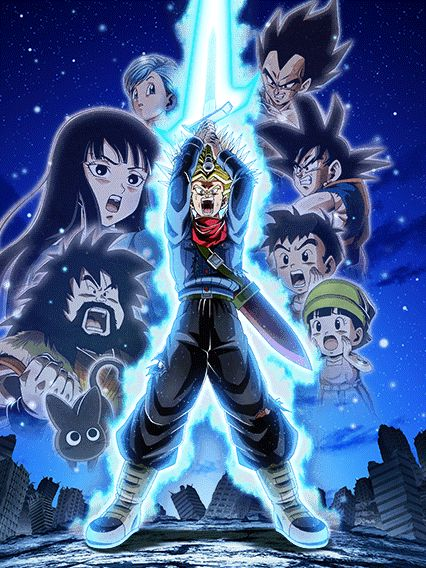
Tal standby pai, tal standby filho.
O trunks vira uma standby dos Z boys ver.0.5 já q em cima da defesa q vc stackou vc ganha 50% de redução de dano e defesa ativa no slot 1, oq torna o trunks uma parede
E finalmente, esse trunks é o segundo standby q pode atacar, oq seria muito legal se não fosse ele ainda ter 2 supers travados por uma chance de 70% (pelo menos na standby ele tem 1 garantido com 5 orbs) e que a standby é algo q atrapalha.
A standby do trunks dura só 4 turnos ao invés de 5 e é carregada com ataques feitos por aliados no time, e apesar de ele ser um tank, o ATK dele continua similar, se não maior q o normal, e se vc analisou, já entendeu o problema.
Imagine q vc está enfrentando um boss muito difícil e precisa usar a standby pra sobreviver e ir pra próxima fase, mas o boss tá na última barra de vida
Oq vc acha q vai acontecer?
É, ele vai mandar um super de 14 milhões e matar o boss, dando um total de 1 carga pra standby e vc vai ser obrigado a usar ela quando o trunks voltar pq vc não pode carregar por outro turno
Entende pq isso dá um certo conflito? O trunks é forte demais pra carregar a própria standby
Claro, a standby é muito forte pq vc está com os stats bem altos e cada carga é 50% de ATK a mais oq é bastante coisa, mas ainda sim, o máximo q vc pode estender a standby é 4 turnos, e isso só acontece se vc deixar o trunks no slot 3 pra ele demorar mais pra voltar, oq não é algo q vc vai poder fazer já q vai ficar sem um slot 1 na rotação.
E pra complementar, essa standby tem sérias falhas, já q ela não muda as animações totalmente, só a lâmina da espada do trunks q fica azul ao invés de amarelo e a finalização é um dos ataques mais brocha do jogo, sem efeitos e com um final anticlimatico, além de não ter uma tela de K.O
Em resumo, o trunks tem muitas coisas boas, mas tmb muitas falhas, e fica difícil só ignorar essas falhas pq pô, é um LR carnival q era pra ser o principal da celebração, kd a consideração?
Pelo menos o banner dele é muito bom..
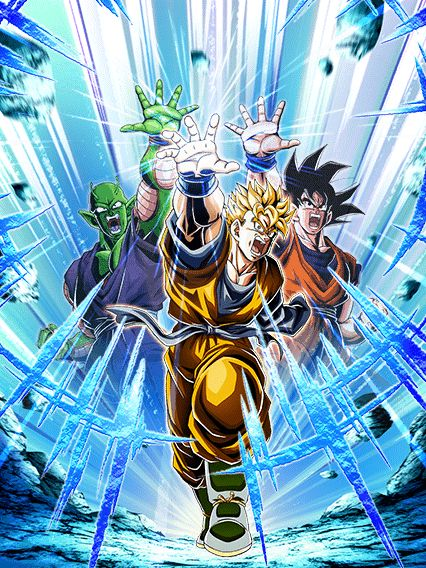
Esse cara aqui tá com zap tmb.
Bom vamo lá, o gohan é um card muito bom, mas não dá pra simplesmente deixar passar que ele não deveria estar nessa celebração pelo simples motivo de precisarmos muito de buffs pra extreme class e um goku black LR carnival no lugar do gohan ajudaria demais o zamasu. Mas não aconteceu, então faz o L mesmo.
Sobre o gohan, ele faz o que o zamasu faz, só que melhor, já q ele tem 80% de redução de dano, mas ela dura por 5 turnos ao invés de 1 só
Isso é muito bom mas não significa q ele é 100% imortal já que um pedaço dessa redução aí só ativa depois que ele der super, oq tmb ajuda já q ele aumenta muito ATK e DEF nos supers e builda atacando tmb.
E o gohan se resume a isso basicamente, ele só é um tank confiável que dá bastante dano
Agora vem a real parte bizarra q é o gohan ter um domínio.
Não reclamando do efeito do domínio pq esse é muito bom (literalmente o domínio do zamasu mas invertido), mas sim do simples fato do gohan criar um domínio do nada, ele não tem uma active ou standby q faz isso ou algo assim, ele literalmente cria o local onde ele morre no OVA a partir do turno 5 sem nenhuma condição, é só muito estranho e esteticamente feio por do nada o domínio ativar e é isso 💀
Sobre o domínio dele, é um domínio brabo
O gohan agora muda orbs pra str pq, pq não né? E tmb dá crítico garantido com 24 de ki, oq é bem brabo já q agr extreme class recebe 30% de dano a mais.
E vamo lá, pra finalizar tudo, tenho q falar sobre o visual desse gohan, já que além das animações dokkan original lindas nele, ele tem uma ost de intro muito boa e a active dele, q aumenta a defesa em 20% pra sempre, tem simplesmente A animação
E não, eu não irei elaborar mais nada, vc vai ter q ver por si mesmo.
Até que enfim, o gohan do futuro com o final bom.
")
Dar dano.
O gohan tem um dos kits mais básicos q existe, ele só dá dano
Ele stacka 100% de ATK por super oq é bem absurdo, e o kit dele é exatamente isso:
Ele não tem uma defesa boa, oq faz vc perder vida fácil e pegar mais buffs, e assim dar mais dano enquanto stacka mais, como eu disse, é um personagem q dá dano
Ele tem sim 50% de chance de desvio e 30% de chance de adicional, mas apenas contra um inimigo androids ou future saga, oq é bem restrito mas tá ali né
")
Quando vc estiver com 10 de vida a gente conversa.
Eu só queria deixar claro que esse é um dos piores momentos "dokkan não sabendo nomear os personagens", tipo, olha a arte desse personagem, ele realmente parece estar no mesmo ssj que sei lá, o goten?
Enfim, esse trunks é um card interessante, só que ele te obriga a ficar com pouca vida
Metade da passiva dele é baseada em HP, e quanto mais baixo, maior é o buff nele, e isso é complicado pois normalmente pra tankar os maiores supers é bom estar com a vida cheia, mas com a vida cheia o trunks simplesmente perde 180% de ATK e DEF, e mesmo que ele tenha 40% de redução de dano sem restrição, não vai adiantar se ele tiver 147k de defesa 💀
Coisas extras q valem mencionar é ele aumentar 40% de DEF no super por 6 turnos, q é bem incomum e junta com um adicional garantido caso ele esteja contra um realm of gods, oq é difícil mas tá ali tmb né
Caso ele dê 6 ataques na luta a redução de dano aumenta pra 50%, mas ainda sim, você não quer manter esse card em rotação principal pq vai dar conflito com outros, pq ele sem vida é extremamente tank e dá muito dano rapidão, mas não dá pra dizer isso de todo o resto do time.

Quando os 20% de redução fazem diferença:
No momento em q anunciaram o eza desse cara eu já fiquei hypado, pq buffs pro zamasu LR né
Enfim, o zamasu tem um kit meio contrário e mais funcional q do trunks, já que ele ganha mais buffs quando tá com a vida no máximo ao invés de baixa, q é muito mais fácil de fazer quando se considera q o time do zamasu tem uns 3 personagens q curam vida
Ele tem 40% de redução de dano sem restrições igual ao trunks, mas a diferença aqui é q o zamasu ganha mais 20% de redução caso todos os aliados na rotação sejam realm of gods, oq é muito fácil já q o time do zamasu normalmente só tem realm of gods mesmo
O zamasu não é um card de dar dano nem nada, mas ele funciona bem de floater mantendo uns links maneiros com os cards e tankando muito bem com a passiva completa (os 20% a mais realmente dão diferença, acredite)
Uma parte meio inútil do kit dele é ele lançar um adicional de 70% de ser super depois de tomar 6 ataques
Acho q no tempo q eu joguei com ele (q é considerável), eu nunca vi isso ativar, até pq meu zamasu tem full desvio.
 & Mai (Future)")
3 restrições pra ter um card bom 💀
Eu gosto deles, uma pena q são muito restritos, mas pelo menos são bons
Basicamente o trunks e mai precisam de um aliado ssj blue pra ter 150% de ATK e DEF, q não é extremamente específico se eles também não precisassem de todos os aliados no turno serem future saga pra terem 30% de redução de dano
E não acaba aí, já que eles ganham mais 100% de ATK e DEF mas só se o inimigo for future saga tmb
E pra completar o pacote eles ganham mais 150% de ATK e critam garantido caso o inimigo seja o goku black ou o zamasu, e finalmente acabam as restrições
Em resumo, caso vc esteja em todas as condições citadas acima, vc vai ter um card muito bom, com uma defesa incrível e um dano maneiro, caso contrário vc vai ter alguma coisa ai
Falar rapidão que eles tem uma ativa quase suicida, já que eles dão um dano do caramba mas perdem metade da defesa 💀
Eu defendo esse card até o fim dos tempos.
Card f2p lindo maravilhoso, com a mecânica de domínio, e que de fato é decente
Ele builda ATK e DEF atacando 5 vezes, e ganha 100% de ATK e DEF quando os aliados forem future saga, e tmb tem uma 50% de chance de critar contra um inimigo future saga ou time travelers
E o kit dele é só isso.
O trunks não tem um kit de 76 linhas, ele é simples e direto, e não ironicamente decente se vc buildar ele com desvio
E ele tem o domínio, mas o negócio do domínio é q ele é só 10% de ATK e DEF pra aliados e inimigos future saga, mas nossa, a animação é tão legal e a ost é tão boa de escutar q coloca esse card num tier muito alto pra mim, simplesmente incrível
50% de chance de defesa ativa (final ruim)
Esse trunks seria até interessante se os stats dele não fossem baixos demais, pq ele tem bastante porcentagens maneiras na passiva e até suporte, mas o final do kit dele me quebra
Ele simplesmente ganha 150% de DEF depois do turno 8.
E pra complementar ele tem 50% de chance de defesa ativa mas só se pelo menos 4 cards no time forem entrusted will, oq é absurdamente ridículo e torna o card defensivamente podre
Eu realmente não sei oq ocorreu, pq esse cara tinha uma base muito boa pra ser um ótimo eza..
…
Tava tudo bem, até que isso aconteceu
Esse não é um momento "oq fizeram com meu garoto?", é só um momento triste, de chorar mesmo
Só.. oq aconteceu? Sabe, os ezas na celebração estavam muito decentes e do nada, resolveram q isso tava bom? Não faz sentido nenhum.
Bom, o goku black stacka 50% de DEF por super oq é legal e tals mas, ele pode lançar 2 adicionais só contra um personagem super class, e é bem óbvio não são supers garantidos, ou seja vc pode ter o lendário turno de 1 super e 3 ataques básicos 💀
E no geral é só isso, ele builda crítico tomando golpes (?????????) e cabou o kit na base
Eu não preciso nem dizer que isso é ridículo pra um EZA de 2023, especialmente de um dokkan fest tão aguardado, é simplesmente triste e não faz sentido fazerem algo tão horrível sendo q o zamasu precisa de qualquer buff q ele puder ter, e não, o goku black não fica melhor contra um dos poucos boss super class do jogo, na vdd ele continua morrendo pros auto attack mesmo
Pelo menos a condição de transformação dele é melhor agr, acima de 60% de HP depois do turno 4..
")
Se vc acha q ele fica melhor agora, não fica.
Ele mantém o stack, tem um valor de ATK decente e 50% de crítico, oq é bem mais interessante, mas..
Eles separaram os adicionais dele pra ainda ter 1 apenas contra super class e o outro não precisa mais, só que são só chances de novo, sabe, fica difícil levar isso a sério
Ele também tem um suporte de 30% de ATK e 3 de Ki meio nada haver mas disso eu não reclamo não
E o kit dele já acabou de novo 💀
Acho que ficou bem óbvio que o goku black é simplesmente horrível e não é usável em nenhum conteúdo difícil, já que ele não tem defesa ativa, redução de dano e o stack dele se torna extremamente devagar já que todos os adicionais dele são só chances de serem supers, ele morre pra qualquer coisa no jogo, contra um super class ou não, infelizmente não importa.
")
AAAAAALLLLLRIGHT GUYS
ISSO AQUI É UM EZA DE RESPEITO MLK
No segundo em q o evento de eza desse cara apareceu nos arquivos do jogo, todo mundo já tinha perdido a esperança de ele ser bom depois do fiasco do goku black int, mas felizmente ocorreu tudo bem.
Daria pra dizer que o goku black é a representação viva do slot 2, pq é ali q ele deve ficar, sempre
Ele já tinha bastante potencial pq desde sempre ele ganhava 50% de DEF em ambos supers, oq já ajudava mesmo q antes do eza ele beirava 200k de DEF 💀
Mas em resumo, o goku black precisa de Ki, exatamente, isto, bastante Ki
Metade da passiva dele é um buff multiplicativo insano baseado no Ki dele, ou seja, pré super ele é um papel e pós super uma parede.
E falando de Ki, ele agora ganha 3 de Ki quando o estiver acima de 18 no turno, oq ajuda demais, e ainda lança um lindíssimo super adicional garantido caso o ki esteja acima de 22, e eu já vou falar que buffs multiplicativos + 2 buffs de 50% de DEF irão resultar em uma cozinha.
Ele tmb recupera vida no final de cada turno mas isso é bem irrelevante na vdd, o foco aqui é o ki, que talvez seja um problema
Depende um pouco da RNG dos seus orbs mas as vezes pode sim ser difícil pegar o adicional garantido com o goku black, oq é triste, mas aí entra o… final blow.
Bom, pessoalmente acho que toda comunidade odeia essa mecânica de golpe final, mas como o goku black pode dar um super de 18 milhões, seguido de um adicional de 11 milhões e outro de 12, fica mais fácil doq parece pegar o golpe final numa partida, e por sinal esse golpe final te dá 6 de ki, retirando o problema de ki já mencionado e tmb 50% de chance de crítico de graça, simplesmente pq sim
E isso resume o kit dele, pq ele é só isso, ele dá muito dano mas ao contrário de muitos outros cards, pós supers ele tá facilmente acima de 1 milhão de DEF, oq torna ele imortal contra quase todo evento no jogo
Mas ele tem uma cereja no bolo, um rage mode
")
Eu odeio as condições disso, mas é muito linda.
Mas meu amigo, estar abaixo de 66% de HP depois do turno 6 é muito tempo, maioria das lutas vai ter acabado jákkkk
Enfim, rage mode clássico onde impede o boss de dar AOEs ou supers, e dá um daninho maneiro já q ele fica efetivo contra tudo até o rage acabar, e pega ki bem fácil tmb
No geral, era basicamente isso, e é muito engraçado o goku black não ter redução de dano ou desvio ou sei lá, mas ainda ser muito bom mesmo com só defesa bruta
Muita gente tava com opiniões distantes sobre ele no lançamento, mas todos chegaram a conclusão de q ele é ótimo e um eza perfeito pro time do zamasu, e eu concordo!
Obrigado akatsuki por não decidir qual eza é bom e qual não é, eu acho…

Simulador de skip.
A celebração depois de uma das mais importantes do ano… é, não dá pra esperar muito
Mas hey, quantidade decente de ds e conteúdo pra fazer
Procurando o inimigo goku's family desde 1990.
O turles é um card legal, só que ele foi bem injustiçado pelos devs
Ele stacka ATK e recupera HP em todo super, além de ter alguns buffs multiplicativos e builda 160% de DEF a mais com só 4 supers, fazendo dele um personagem stacker muito decente
Pra começar, ele tem uma intro com os visuais lindos maravilhosos, uma OST incrivel, e é claro,
He is a real one.

Mas infelizmente a intro só ativa contra um inimigo gohan kid ou goku's family (isso pode ter soado confuso mas na vdd existem cards que incluem o gohan sem necessariamente ser um card goku's family)
E a intro não ativar já é um problema, já q ele daria um suporte de 3 de Ki e 18% de ATK pra todos aliados extreme pra sempre, então o problema já tá aí, mas piora
Lembra da defesa q builda com supers? (isso em si já é um problema) Bom, junto com essa defesa ele builda incríveis 20% de redução de dano, isso honestamente é ridículo, tá no nível de acharem que crítico e redução de dano são equivalentes.
E ele ainda fica efetivo contra tudo depois de dar 6 supers, oq é muito se for ver o quão rápidas as batalhas tem sido ultimamente, mas enfim, pelo menos isso n é restrito tmb
Ele tem uma active boa com a condição horrível de goku's family mas caso não tenha cê pode usar a partir do turno 6 pelo menos
Agora, não tem como deixar passado q o turles é basicamente o ginyu desse ano e os dois nem se comparam, já que o turles simplesmente tem falhas bestas que batem uma tristeza na real
Exigir inimigos específicos pelo nome em um card de 2023 é muito idiota, triste oq fizeram com o rapaz, acham q os 20% de redução vão salvar ele do super do zamasu red zone..
Vegeta e Trunks versão extreme class.
Por que esse card é melhor que o Turles?
O card é literalmente um tank decente e suporte pq sim, não tem nem oq dizer, eles são melhores
Eles buildam tomando ataques e é só isso, eles não vão dar o maior dano do jogo mas só de terem 350% de DEF buildados, junto com defesa ativa e 20% de redução de dano no slot 1…

Fraudehan só que.. pior?
Personagem inútil que builda dando super attack, literalmente sem uso
Tipo, eles não dão nem suporte pro Turles, praq eles existem se o outro card é tank, é suporte e linka bem?
")
Ele é um eza.
É um card decente até, vai linkar com o dokkan fest por eles terem nomes diferentes, e no geral não tem defesa ativa ou algo assim mas pelo menos consegue ter 360% de DEF se estiver num time full space travelling warriors, oq não é difícil, é o time dele.
Ele tem uma transformação oozaru, que é legal eu acho, pelo menos considerando q o bug de anular os supers e AOEs exista no futuro.
Mas que tem uma passiva de 1 linha.
Nada a elaborar, é só isso.

Ele é um suporte pra power of wishes.. parabéns pra ele, eu acho.
Eu pessoalmente gosto da arte desse cara, mas ele é um nuker genérico, é só isso q ele faz
Ganha ATK, DEF e chance de critico por orb, e quando o HP tá abaixo de 59% ele dá mais dano, é só isso mesmo.
Cooler str versão super class.
Oq eu disse acima não é brincadeira, eles realmente tem um pedaço da passiva idêntico ao do cooler, mas enfim, é bem isso q eles fazem, tirando a parte de stackar ATK
Buildam com 10 ataques, ganham buff quando tem um Goku na rotação e ficam mais fortes quando ki tá em 24
Eles tem uma active nuke q dá um dano do caramba, e é isso
Em resumo, eles dão dano e é só isso, a defesa deles é decente mas é bem meh, a não ser q eles deem 4 supers, enfim, um eza decente. Mas OQ ISSO TÁ FAZENDO NUMA CELEBRAÇÃO DO TURLES?????

…pq?
Esse card não basta ser o terceiro goku base no ano, mas ele também é horrível.
Esse goku é um card AOE, feito pra 1 EVENTO, SÓ 1
Ele só tem passiva se vc estiver enfrentando MAIS DE 2 INIMIGOS, não pode nem ser 2 ou mais, é muito decepcionante, chega a ser ridículo
Esse card em 55% é muito horrível, n tem nem chance, ele tem uma defesa podre e nem o dano em área ajuda, é triste demais.
Pelo menos a active dele é bonita, mas é só isso, e apesar das muitas coisas boas esse ano, o acontecimento de terem 3 gokus base no ano é bem absurdo e gerou uma certa reclamação..
Pelo menos, no global, esse cara lançou com o incrível sistema de pity q é muito bom, então já é alguma coisa.
Por mais bizarro e estranho q isso pareça, ele não é ruim.
Ele tem números muito bons, 30% de chance de desvio oq é meh, mas ele é um nuker, e ainda tem um adicional de 50% de ser super q não tem nenhuma condição
A única parte triste é q esse vegeta tmb muda orbs mas só se tiver um inimigo goku, é a única parte ruim dele pq em geral ele é um card estranhamente forte.
A celebração onde todo mundo esperou o goku god voltar.
Normalmente o halloween é coisa curta, só um banner e um card f2p, nada demais, mas acabaram colocando bastante coisa por causa do global estar tentando apressar o conteúdo pra sincronizar com o jp, oq resultou em umas loucuras mas blz

Eu realmente gosto muito dessa arte.
Essa 18 é não ironicamente um card decente e estiloso, ela tem bastante buffs só de porcentagem, totalizando 360% de ATK e DEF, oq é bem usável até
Ela ainda tem mais 180% de ATK (totalizando 540%) e 48% de chance de desvio se estiver num time peppy gals (ou por algum motivo se estiver contra um inimigo phy) e fica super efetiva por 6 turnos depois de desviar de 1 ataque, oq não é difícil, bem tranquilo na real
No geral esse card é só um card visualmente bonito e não necessariamente forte, ela só tem uma arte muito maneira e animações decentes, mas não sai muito disso.

Pessoa chamada debuffs q não funcionam em mais da metade do jogo:
Esse card tentou muito ser oq a cheelai int foi ano passado, só que infelizmente não rolou dessa vez, já que metade da passiva dela só ativa se o inimigo estiver debuffado
E quando eu digo metade, é sério, se o inimigo não tiver nada ela tem 190% de ATK e acabou (vale mencionar q os stats dela são bem baixos), além de ela perder um crítico garantido e quebrar uma ação do inimigo no turno
No geral, nada muito a se dizer, ela até tem um suporte de ATK pra geral mas só isso não compensa o fato de ela quase não ter defesa, oq torna ela bem mais inútil doq ela já é
Sendo bem honesto, pelo menos a celebração de download trouxe uma luta difícil que pode ser debuffada, mas é só isso q tem e antes da celebração a mamba era praticamente inútil em tudo.

")
O card com intro sem intros existirem.
Esse eza é interessante, mas é extremamente baseado no rng e isso é triste, no geral ela tem dano e crítico por 7 turnos, depois ela fica bem mid mas olha, considerando que todas as lutas difíceis duram pouco tempo, é decente
Ela tem mais crítico se o inimigo tiver selado, oq é bem ehhhhh mas ela no geral é boa pelo menos.
...?????????
Isso é um eza por acaso? Eu honestamente não sei.
Ela tem 1 linha de passiva, e todo o resto só ativa se o inimigo tiver debuffado, e nem com tudo ativo ela chega a ser decente, um completo disperdício de eza.
Esse card é estranhamente decente..?
Ele tem umas % legais de ATK e DEF, além de ser um suporte de 40% de ATK e DEF pra todos TODOS super class
Ele ganha mais buffs se o inimigo estiver debuffado, mas pelo menos isso não define o card inteiro 💀
Ele tem o INCRÍVEL unit super attack com o paikuhan, q é bem aleatório mas tá ali.
GOKU SSJ4 WOOOOOOO
Essa foi hype slk, o rapaz ssj4 finalmente chegando pro global, os eventos e tals, junto com a mecânica de orbs de link skill, bem poggers no geral em relação a conteúdo.

EU AMO EU AMO ESSE CARD.
O goku é extremamente hype, animações lindas, perfeitas, mas ele começa devagar.
Ele tem um dano maneiro, com 50% de chance de critar e ainda compartilha 6/7 links com os macacos do sétimo aniversário.
Ele precisa ficar no slot 1 obrigatoriamente, não é tipo o vegeta e trunks, ele realmente precisa ficar ali, já que no slot 1 ele tem 40% de redução de dano e 70% de DEF a mais.
Uma coisa é que essa defesa a mais é ativada quando o goku recebe OU desvia 1 ataque, oq é bem diferente e ajuda demais, só tem um problema…
No geral o goku tem uma defesa decente e um dano maneiro, mas ele se resume a uma coisa em específico, LEVAR 5 ATAQUES para ativar a standby dele, e vc PRECISA ativar a standby o quanto antes pra seguir em eventos mais difíceis
Esse é o único problema, pq ele precisa levar esses 5, ele não pode desviar de jeito nenhum, tanto que a estratégia é deixar ele 99% se necessário, mas NUNCA ativar o 5 de desvio que tem no hidden potential
Enfim, tomando os 5 ataques vc pode trocar para o uub.
Invencível.
O uub é uma parede impossível de quebrar, e é a única standby capaz de rivalizar com o vegeta dos Z boys (na minha honesta opinião eles são melhores, dá pra entender o pq depois).
O rapaz tem 300% de DEF, e a cada orb pego, são 10% de redução de dano (sim, pegar 10 orbs te deixa com 100%, e não é muito difícil) e humildemente ganha defesa ativa caso vc pegue 3 orbs, oq nem era necessário mas, pq não, né?
Ele tmb tem algo insano, q é um suporte de 70% de DEF por 2 TURNOS sem condição, oq é absurdo e torna qualquer personagem do time melhor, é completamente insano.
O uub por algum motivo tem uma nulificação de supers desarmados, oq é estranho pq não é como ele precisasse, mas é legal que incluíram, eu acho
Mas calma lá que nem tudo são flores, agr vem o problema do rapaz
Tinham que zuar o card com alguma coisa, e escolheram fazer isso colocando a mecânica de mudar orbs aleatoriamente pra INT, oq ehh.. vc já sabe
Claro, o uub é um tank e vc não precisa pegar 70 mil orbs já q ele ganha defesa ativa só com 3, mas entende que as vezes nem isso vc consegue por causa do orb change podre? É triste cara
Enfim, tirando isso, o uub só dura um turno basicamente, já q quando vc voltar vc já tem q transformar, se não a standby acaba
Mas carregar ela é a coisa mais fácil do mundo, já que ela carrega pegando orbs e cada orb vale por 2, oq torna quase impossível ver a standby incompleta
Mas enfim, quando o contador chegar a 30 orbs, pegue sua churrasqueira e comece a cozinhar.

Mas será que crita?
Se vc tinha alguma, qualquer reclamação sobre o goku ssj4, ela não existe mais a partir daqui.
O goku se torna o card perfeito, já q ele começa curando 77% da sua vida pq sim, ele pode
Ele já chega no turno tendo 50% de redução de dano, chegando facilmente em mais de 500k de DEF, tendo defesa ativa no primeiro turno pra garantir q vc não vai levar dano, e ele ainda completa com um ataque absurdamente alto, sendo 15 milhões o mínimo do mínimo que ele pode fazer
E por algum motivo ele tem muitas chances de crítico diferentes
Pq tantos críticos? Não sei, mas estou aceitando.
Vale mencionar que com 24 de Ki, além do crítico ele ganha 59% de ATK a mais, oq só deixa ele mais forte doq ele já é
Em resumo, o goku é um card que finaliza qualquer batalha pra vc, já que ele não vai tomar dano de jeito nenhum e vai dar um dano muito alto e que nenhum boss tanka tão facilmente
Eu não estava brincando quando disse que ele cozinhava.

Claro, leva um tempo e um pouco de RNG até o full power sair, mas quando ele aparece, é pra garantir que você termine a luta do jeito mais fácil e tranquilo.
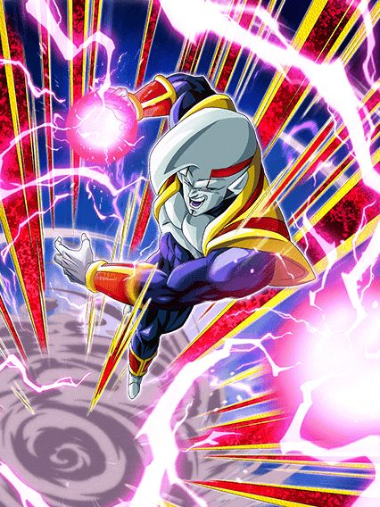
Pessoa chamada pure saiyans:
Esse baby é um card genérico anti-saiyajin, se estiver contra pure ou hybrid saiyan ele é decente e se não estiver, você não tem card, cabou.
SE ele estiver contra um pure ou hybrid, ele tem crítico garantido e um dano maneiro, e ele tem big bad bosses, é maneiro.
Ótimo eza, MAS OQ ISSO TÁ FAZENDO AQUI??
Esse eza é legitimamente muito bom e facilmente entra pros top 10 ezas de dokkan fest, mas o momento que ele saiu não faz nenhum sentido 💀💀
Sobre o card em si, o bills é um personagem stacker que é um tank em certas condições
Ele tem 40% de redução de dano caso pegue 3 orbs e consegue ter 70% de redução de dano caso vc pegue 7 orbs (esses 30% extra só estão ativos antes de vc atacar mas ehhh), infelizmente ele não é um orb changer naturalmente, ele só muda orbs pra rainbow se estiver contra um realm of gods (oq faz dele eficaz na red zone dismal future mas nem tanto em outras)
Ele tmb ganha 150% de ATK e DEF no turno depois de levar um golpe, oq tá ali eu acho
O buff é bom, mas não era melhor ele buildar isso doq correr o risco de não levar um ataque antes de atacar?
E ele stacka ATK no super, ou seja, caso vc pegue bastante orbs e leve um ataque antes, vc vai dar bastante dano e tankar legal praticamente tudo, oq faz do bills um ótimo personagem
A active dele tem o mesmo efeito antes do eza, mas 50% de ATK e DEF a mais quando usa a active faz uma grande diferença slk..
Certamente um dos meus momentos favoritos quando o bills aparece pra ajudar o goku ssj4 a derrotar o baby, tá no nível do super 17 e super buu.
Sheesh.
Essa é fácilmente a melhor celebração do heroes em todos esses anos, os cards são bem mais decentes doq o normal e bem mais interessantes, heroes finalmente heroes entrou pro meta slk
")
Holy moly.
Se esse card não fosse restrito a crossover e giant ape power, ele seria um top 5 cards do jogo só por ser tão absurdo.
O cara tem uma intro incrível (sem voz de novo, pô global 💀), 60% de redução de dano, 70% de chance de critar e de dar um super adicional, tudo isso com supers de 10 milhões e mais de 600k de DEF na maior tranquilidade.. por 6 turnos pelo menos
Agr, q esse cara é insanamente forte, ele é. O cara é invencível nos 6 primeiros turnos, pode dar até 3 supers de mais de 10 milhões com crítico quase garantido, como vence?
Pra completar ele tem uma active insana que dá muito dano, deixa todos os ataques críticos e ainda faz uma coisa extra
Parte da defesa do vegetto ativa no super, e a active conta como super, tornando ele invencível contra AOEs e supers turno 1 slot 1
No geral, heroes esse ano finalmente se tornou um time usável depois de tanto tempo, obrigado omatsu..? Acho q ele tava de férias e deixou o estagiário fazer os cards.
")
Pq sem big bad bosses?
Esse cara é muito lindo, a arte dele é incrível e meu mano, precisou de uma fusão em blue evolution pra derrotar esse cara e ele simplesmente não é considerado um grande vilão pra eles enfrentarem
Pra começar, ele tem 50% de chance de defesa ativa, da qual eu não vou nem tentar comentar pq ele pelo menos tem defesa ativa garantida se o time inteiro for crossover, então ok.
Bom, a falta de big bad bosses se apresenta rápido, já que o dano dele não é muito alto na base, mas pelo menos ele stacka ATK
Ele infelizmente peca nos adicionais, já que ele tem chance de lançar um adicional só se tiver um goku de inimigo, ou seja, na maioria das vezes vc depende do hidden potential
E falando da transformação, ele tem uma condição demorada, mas decente, já que é só chegar no turno 5
")
Lendário.
Agr ele tem mais adicionais, mas continua com BBB faltando 💀
Enfim, ele não stacka nada mas o dano dele se torna bem melhor e a defesa no geral boa tmb, e agr ele sempre tem defesa ativa independente do time, oq é bom e ajuda
Ele tmb ganha buffs dependendo da sua vida, oq não é difícil, já que no primeiro turno da transformação ele cura 40% DE VIDA e nos turnos seguintes 15%, oq é bem forte já que o time heroes tende a ter menos vida
Ele tem um adicional meio besta que só ativa se tiver um inimigo ssjblue, e eu prefiro não comentar sobre isso pelo bem do meu mental
No geral, eu gosto desse card e acho ele meio subestimado pela comunidade.

Se ele fosse um suporte pra super tmb..
Esse Fu muito se resume a pegar bastante orbs, e é isso
O fu é um orb changer suporte, mas infelizmente apenas pra extreme, é uma coisa triste mas justa, pq o suporte desse cara é insano
Ele dá 50% de ATK e DEF e 5 de ki, o suporte desse cara é maior que a passiva de um certo card..

Bom, esse rapaz é bom, tem 50% de desvio e defesa decente, então ele é bem usável por ter bastante coisa no kit
Sabe oq mais ele tem? BIG BAD BOSSES RAHHHHHH

Eu não sabia que era possível ser tão mid.
Eu não quero elaborar a passiva do broly, então eu vou só escrever ela:
Ki +3 and ATK & DEF +200%
Plus an additional ATK & DEF +100% when attacking
É isso, cabou a passiva
COMO ACHARAM QUE ISSO É BOM?? Meu mano tem 300% de ATK e DEF e acabou, boa sorte
Mas calma lá, pq vc não tem só isso, claro, vc pode aumentar ainda mais seu dano e defesa lançando um incrível adicional com 50% de chance de ser super, outro adicional de 50% enfrentando 2 INIMIGOS, e um maravilhoso esplêndido adicional com 70% de super enfrentando um INIMIGO FUSED FIGHTERS
É ele? É o card que vai destruir o zamasu red zone???? oooooomaga
Só avisando que a defesa dele é horrível independente da quantidade de supers, e o dano dele é horrível, chega a ser ridículo pra um card de 2023, até o super 17 é melhor que isso 💀
")
...vegeta shaft #7298736.
Eu não entendo.
Eu realmente não entendo
Esse cara era pra ser até decente mas os stats horríveis dele quebram demais, além da passiva toda estranha
Ele builda dando 3 supers, que legal ein, melhor ainda vendo que o único adicional na passiva dele é travado por número de inimigos, coisa boa
Caso vc esteja contra um inimigo, ele dá mais dano e crítico garantido, só que mesmo buildado ele não consegue ter um dano bom, se ele desse supers de 12 milhões de valor de ataque com crítico garantido, ele podia ser um card q só dá dano mas pelo menos ele faria isso direito
Contra dois ou mais inimigos, ele dá menos dano e perde o crítico garantido, mas tem 50% de chance de dar um adicional e 50% de desvio, q é uma coisa legal
Mas infelizmente é só isso, o vegeta buildado com suporte e etc não consegue dar dano ou tankar, sendo a única opção dele os 50% de desvio q ele tem acesso em umas 3 lutas difíceis do jogo (impressionante)
Uma pena, pq a arte do SSR e do TUR são muito boas e as animações tmb, na real esse cara devia ter pelo menos uma intro, fez falta.

A arte do SSR era melhor.
Eu gostei muito do awaken desse cara, no geral oq ele podia ter melhorado antes ele realmente melhorou e isso deixou ele bem forte
Agora ele tem 60% de redução de dano com o time full crossover, um adicional de 70% de ser super sem nenhuma condição a mais e mantendo um dano até legal nos supers, além da ótima defesa
O grande problema dele é que a maioria da defesa dele vem no super, assim como a maioria dos cards do heroes, então não pense que jogar ele no slot 1 com 60% de redução mas 97k de defesa 💀
Ele tmb manteve o negócio de auto-selar o próprio super caso vc fique abaixo de 20% de HP, mas com cards mais fortes tipo o vegetto, junto com as curas de outros, estar abaixo de 20% é extremamente incomum e vai ser raro acontecer
No geral, é isso, não posso reclamar da falta de big bad bosses nele pelo menos, aqui faz sentido.
A arte do SSR era melhor tmb.
Esse rapaz virou uma lenda e é mais insano doq parece
Nos primeiros 5 turnos ele literalmente é comparável com o ferrando Piccolo laranja, já que ele consegue ter mais de um milhão de defesa pré-super com defesa ativa, isso levando só 3 ataques pra buildar defesa, então é, é comparável com o piccolo
Lógico que o piccolo é melhor ainda já que o janemba só pode ser usado em crossover, mas deu pra entender
Ele tmb builda um ATK legal atacando 3 vezes, e com um suportezinho e big bad bosses ativo ele passa fácil de 10 milhões no super
Junta isso com 70% de chance de critar depois de levar 5 ataques e ele completa com um kit muito forte, já que mesmo sem a defesa ativa ele ainda consegue ter uma defesa muito boa, e sendo vilão ele já leva menos dano.
Desvia ou morre capítulo 364374691
Essa towa tem um suporte insano, já que ela dá 40% de ATK e DEF pra todo mundo e tem uma passiva levemente decente com 50% de desvio, mas infelizmente ela não vai tankar os ataque básico de nenhum boss
Pelo menos se ela estiver abaixo de 50% de HP o suporte aumenta pra 100% de ATK e DEF, claro q só pra extreme esse pedaço, mas ainda sim muito forte
Infelizmente é isso, ou ela desvia, ou ela vai morrer e é bom q vc desvie ein
Pelo menos ela tem um suporte similar a kaioshin do tempo mas tem o desvio pra ajudar.
")
Tutorial de como tornar o vegetto limit breaker o melhor TUR do jogo (modo fácil)
Esse cara é insano de quebrado e o melhor eza da celebração. Eu vejo ele do lado do vegetto limit breaker do mesmo jeito q eu vejo os mamacos junto com o goku ssj4, ele é o slot 2 perfeito e ajuda totalmente o tank absurdo no slot 1
Ele tem uma passiva boa, buffs multiplicativos, 30% de redução de dano com um time full crossover ou full giant ape power e tem 50% de chance de counterar TODOS os supers do jogo, oq é absurdamente quebrado junto com tudo q ele tem
Esse cara ainda é um suporte, dando 30% de ATK e DEF pra giant ape power e dá 30% pra crossover separadamente, ou seja, são 30%s separados mas se o personagem tiver nas 2 categorias, ele ganha os 2 buffs, não sei quem teve essa ideia mas é genial.
Agora a parte mais quebrada: Esse cara compartilha 6/7 links com o vegetto limit breaker, junto com os 60% de ATK e DEF do suporte, que somado as links, o vegetto do lado desse cara ganha 140% de ATK e 80% de DEF, tornando um card quebrado ainda mais quebrado e na minha mais humilde opinião, uma das rotações mais fortes do jogo, já que enquanto o vegetto tanka e dá muito dano, esse cara completa com uma defesa muito competente, suporte e o counter que pode salvar muito
Simplesmente uma lenda.
Duvidaram dele e ele cozinhou muito.
Muito legal ele não ter uma passiva extremamente longa, mas ser um card muito bom, já que tudo q ele faz é buildar 150% de ATK e DEF fazendo 5 supers, e acabou, é só isso
Por sinal ele builda com supers mas consegue lançar 4 em 1 turno, então ele builda fácil
Nesses supers seguidos ele consegue chegar a 1 milhão de DEF e e passar de 10 milhões de ATK
Grande problema dele q tmb é o da maioria dos cards do heroes é que ele leva muito dano antes de dar super, ou seja, nem pense em jogar ele no slot 1 ou em lutas q tenham AOEs (ou builde ele com desvio no hidden potential, mas não conta com isso toda hora).
Mid.
Esse cara literalmente tentou copiar o broly ssj4 mas esqueceu dos supers adicionais, resumindo, ele não tem nada de adicional na passiva, oq traduz pra "eu irei dar um dano mediano e morrerei para supers e ataques básicos tmb"
Eu não vejo esse cara sendo útil exceto pelo fato de ele dar 40% de DEF pra aliados extreme, já é alguma coisa, pena q só tem isso.

Melhor estar enfrentando um goku ein.
Esse cara tem 280% de ATK e DEF, 50% de chance de dar um adicional e é só esse o kit dele, acabou
A única coisa q ele tem é crítico garantido contra um inimigo goku, e fim de kit
Preciso falar do quanto esse cara é útil, já que todos os bosses do jogo incluem goku no nome né..
THE GOAT, THE GOAT
Literalmente o segundo melhor eza da celebração, e uma lenda completamente
Esse cara tem defesa ativa pra sempre e 100% de DEF a mais só com 1 aliado heroes, ganha 150% de DEF por 5 turnos tomando 1 ataque e builda 150% de ATK e DEF tomando APENAS 3 ATAQUES, e no geral linka bem com saiyajins
E aí tem o mais quebrado, o cara simplesmente cura 10% de HP do dano q ele der
Tem noção de q esse cara dá supers de tipo, 5 a 6 milhões? 10% é muita coisa, mesmo que não pareça
Se esse cara critar, ele vai curar sua barra de vida inteira de graça com 1 super, isso é muito absurdo, esse cara era pra ser um eza secundário..
Tipo, ele é um tank q pode ser muitas vezes jogado no slot 1, já que todo o dano que ele levar ele vai curar de qualquer jeito né
Só tomar cuidado com bosses phy, tirando isso, the goat.
Hey olha só, ele stacka defesa.
Esse cara não é nada mal, tem um ataque bom (infelizmente ele só ganha mais uns 100% se o inimigo tiver debuffado mas ok né) e ele stacka 50% de DEF por super, além de ter 2 de ki e lançar um super adicional garantido se geral do time for do heroes, q adivinha, é o time q ele encaixa
Os links dele podiam ser melhores mas pelo menos ele consegue stackar relativamente rápido se ficar na rotação por um tempo
Vale lembrar q ele só stacka defesa e não tem nenhuma mecânica a mais pra ajudar.. onde foi q eu vi isso esse ano?
Uhhh 3 inimigos?
Não? Já pode fazer o L então.
Esse cara tem um kit estranho bizarro, ele tem 300% de ATK e DEF e lança um adicional com 50% de chance de ser super, mas só contra 1 inimigo e é só isso q ele faz
Caso vc esteja contra 3 inimigos ou mais ele por algum motivo vira um deus no jogo, já q a partir de 3 inimigos ele tem 10% de redução de dano por inimigo, mais 150% de ATK e 200% de DEF com 50% de desvio
É desse tipo de mecânica q eu falo, além do desvio ele tem a redução de dano, se ele não desviar ele ainda consegue tankar auto attack, pena q ele é um card heroes com links horríveis, preciso ver se ele linka legal com o babidi LR depois..

Nada mal pra uma f2p.
Ela é um ótimo card pra battle roads e outros, ela debuffa bem nos supers e tem 50% de desvio com 2 aliados heroes
Ela tem 50% a mais de ATK quando o inimigo tiver abaixo de 80% da vida oq é relativamente fácil e ainda tem um adicional de 70% caso o inimigo caia abaixo de metade da vida
E pra finalizar ela ganha 10% de chance de crítico toda vez q ela ataca um inimigo com qualquer debuff, oq é interessante mesmo q pare em 50%
Eu diria que ela é uma f2p muito decente, tem debuffs, desvio q é ótimo pra ela, crítico e adicional, no geral um card que não necessariamente foca em algo específico pra ser boa mas q consegue ter um diferencial de outros f2ps, belo eza e com certeza uma evolução do card dela antes q era horrível.
")
Uuhhh oq é isso?
Eu não entendo a lógica desse card, ele precisa do time e ao mesmo tempo não precisa
Esse trunks tem 4 estados possíveis onde ele pode estar num turno, sendo esses:
100% de ATK e DEF se estiver enfrentando só 1 inimigo e mais 100% de DEF e 50% de crítico se o inimigo for extreme
150% de só DEF se tiver 2 ou mais inimigos (os 100% se for extreme funcionam aq tmb)
Aí ele tem 100% de ATK e DEF e crítico garantido se ele de algum jeito for o único defenders of justice no time, oq contradiz o time inteiro onde ele deveria funcionar
E pra finalizar ele tem 50% de scouter e dá 35% de ATK e DEF pra defenders of justice caso tenha de fato outros defenders of justice no time
Em resumo, condições muito estranhas que se misturam mas nunca tem como ativar todas de uma vez, e além desse cara não dar dano mesmo com crítico ele não tem defesa já que o time dele é todo estranho e ele mesmo não sabe se funciona ou não.
Tentando entender de onde isso veio.
Isso veio num timing muito estranho e ainda por cima é uma celebração compartilhada do global e jp (me pergunto se isso tem a ver com a sincronização ou não.. hmm), ninguém tava esperando isso já que geral já ia skippar o super trunks mas olha só, veio novidade gamer.
Bom, eles tentaram muito.
Essa 21 literalmente é só mais uma demonstração que metade do time de balanceamento desse troço não está prestando atenção nos eventos, já que pela milésima vez ela é um card slot 2 ou 3, com nenhuma mecânica que ajude ela e poxa, podia ser melhor
A 21 tem uma das mecânicas mais irritantes que existem, que é ter 50% de chance de desvio, mas só DEPOIS que ELA ATACAR, e o pior é q ela ganha um buff de ATK depois de desviar, então pq ela não desvia sempre?
O maior problema dessa 21 é o fato de ela não ter um balanceamento legal nas habilidades
O kit dela tem bastante coisa, é longo, mas ainda sim ela não consegue funcionar direito por haverem opções melhores
Junta isso com metade do kit dela sendo a seguinte mecânica de adicionais:
De novo, muita coisa né? O kit é legal mas tem falhas visíveis pela falta de competência da akatsuki, já que uma coisa que essa 21 tem são facilmente uma das melhores animações em supers desse ano e até do jogo todo slk.
Bom, ela se transforma mas já vou avisando que não adianta muito
Ajudar ajuda, mas é complicado, ainda mais pela condição de transformar dela, turno 5 contra apenas 1 inimigo é de se matar viu..
")
21%.
Que maravilha, pegaram um personagem com relação importante com números e fizeram uma passiva inteira com isso 💀
Bom agr a 21 se torna uma máquina de curar vida, já q assim q vc transformar, ela já vai curar 30% de HP e cada super attack recupera 5%, além de curar mais vida se vc sair do turno abaixo de 60%, oq é bem decente.
Eu não sei qual é a de fazerem personagens crossover ganharem um buff muito grande no super, já que TODOS tem isso, e não é uma coisa ruim pq é um buff multiplicativo que ajuda demais mas caramba cara, a 21 precisa levar 1 golpe pra ter 60% de DEF a mais e 35% do kit dela só ativa quando ela dá um super, aí fica difícil
Ela lança 2 adicionais e cada um com 70% de chance de serem supers, coisa muito boa a não ser q vc consiga a sorte grande de não conseguir 70% nenhuma vez, aí pode fazer o L a vontade
Ela transformada tem sorte de ter uma defesa mais decente e ganhar Big Bad Bosses, já que ela tem incríveis 21% DE REDUÇÃO DE DANO, mas pelo menos depois que ela der super, pelo menos rainbow, ela consegue ficar na casa dos 1 milhão de DEF, isso claro se suas chances de adicional ativarem e sua build do hidden potential tmb
No geral a 21 continua frágil mas ter a redução de dano ajuda ela a tankar os AOEs hilários dos bosses (muito divertido), então ela é bem melhor mesmo
Ela tmb tem uma active que quebra uma ação do inimigo e deixa ela efetiva contra tudo no turno, mas infelizmente a falta de algum stack faz ela imitar o fraudehan e sua active sem dano, mas ela compensa fazendo a mesma coisa q o vegetto, a active conta como super e ativa os stats a mais dela, oq ajuda no slot 1
Eu pessoalmente não gosto da active mas poxa, é pelo menos decente e ajuda a 21, já que esse card no geral faltou muita coisa pra ser melhor, especialmente depois de lançarem um dokkan fest honorário no heroes.
")
Ela tem um sonho.
Eu gosto de q apesar de a comunidade dokkan não ter neurônios funcionais, todo mundo concordou que a ost da intro dela é uma ost de jojo, não tem argumento contra
Sobre a 21, ela é a parceira de link perfeita pra 21 dokkan fest, já q depois de transformar elas compartilham 6/7 links, incluindo big bad bosses q eu nem preciso explicar a importância
Essa 21 basicamente é muito boa no começo da luta e vai enfraquecendo depois, já q ela tem um buff bem alto de 120% de ATK e DEF e 70% de lançar um super adicional na intro dela
Junto com isso ela tem um buffzinho de ATK e tem incríveis 21% de redução de dano enfrentando 1 inimigo... Eu não preciso falar dos 21% outra vez né?
Uma coisa diferencial dela é q ela é um card muito forte quando vc ou o inimigo tão no limite da vida, já q se sua vida estiver abaixo de 60% ou o inimigo estiver abaixo de 30%, ela crita garantido, isso é bem forte considerando q ela pode lançar 3 supers por turno e cada super aumenta 50% ATK e DEF no turno, então no geral bem forte
Infelizmente ela não dá suporte direto pra nada, e tem uma mecânica de final blow que cura 30% de HP, não é a coisa mais incrível do mundo mas tá ali né
Em resumo, é um card bom mas q tem certas falhas em design, mas no geral, muito boa no começo da luta (aparentemente essa 21 tava bugada e a intro dela tava durando mais turnos q deveria, mas aí eu n confirmo pq não fiz summon xd)
O cara que fez o eza do goku black retorna pra cozinhar novamente.
Esse eza tá em um nível forte até demais pra um time parado e vazio como androids, pq ele é insano
Pra começar, stats altos, buffs de passiva, e simplesmente 50% de chance de desvio pq sim, isso já é bom, mas melhora
Eles simplesmente ganham mais 35% de DEF multiplicativo e um adicional de 50% de ser super depois de desviar de apenas 1 ataque, só isso, desviar de 1 ataque, incrível demais
E como se não bastasse esse card ter uma defesa muito decente e o desvio, eles completam sendo um suporte de 50% de ATK e DEF pra androids, poderia ter pedido mais?
Esse card consegue ajudar a 21 dokkan fest um pouco pelo menos com o suporte, mas se vc achou q defesa decente + suporte e desvio foi uma boa combinação, se prepara pra parte divertida..
De novo, ezas não podem mudar condições de active, mas trocar pro android 16 por apenas 3 turnos é o bastante pra causar um baita estrago..

É isso, o cara q fez o eza precisa de um aumento.
O android 16 dura 3 turnos apenas e isso é sorte pro boss, já que ele literalmente desmantela qualquer coisa q cruzar seu caminho
Pra começar o 16 tem um buff de 160% de ATK e DEF multiplicativo em cima de 240%, já sabe oq vai acontecer né?
O 16 literalmente dá mais de 19 milhões de dano crítico garantido e aumentando a defesa num nível inimaginável, já q com um triplo super ele literalmente chega em mais de 2 milhões de defesa como se não fosse nada, ele só pode.
E sim, eu disse triplo super, pq esse cara lança um super adicional quando tiver mais androids na rotação, tem noção de quantos cards precisam de uma mecânica fácil assim?
No geral o 16 é absurdo de forte, comparável a outros deuses do jogo nos melhores turnos e isso é muito bom, já que androids é uma categoria meio ignorada e esse eza abriu muitas possibilidades pra mais buffs, quando lançarem um cell max ou dupla dos gammas, o time vai ser muito forte e competitivo, viu só oq um eza decente pode fazer?
")
A super class com big bad bosses.
Bom, essa 21 tinha literalmente o suporte como o kit inteiro dela, então eu diria que agora ela realmente tem um kit jogável olha só
Ela tem muitos 21s no kit, é impressionante, mas basicamente ela tem 121% de ATK e DEF base e ganha 21% por androids no time e outros 21% por power absorption, então sim, ela é limitada a 1 time praticamente, mas ela até funciona bem nele
Infelizmente ela só faz isso, não tem outra coisa q ajude mais, o melhor q dá pra fazer é colocar desvio nela, e torcer, já que ela até tanka bem mas é aquilo né, tem limites
Mas no geral, um card muito decente pra uma f2p, já que ela tá linkando 6/7 links com a dokkan fest e dando suporte ainda, belo card (sempre confiei nela)
Kd a info da celebracão?
É, eu não tankei o global ter esquecido de mandar a info da celebração por 1 dia inteiro e ainda por cima incompleta, muito obrigado omatsu
Bom, essa é uma celebracão tranquila, nada pra desmontar o jogo.
talvez tranquila demais.. kd os eventos?
")
E então o número de gokus em um LR carnival aumentou pra 4.
Esse é um card que dá dano, wow, que coisa maravilhosa pra um meta onde tudo são AOEs e coisas pra tankar
Pelo menos o dano é bom.. se vc pegar os adicionais
Esses caras tem uma mecânica diferenciada que dá pra eles 1 adicional com 50% de ser super a cada 3 orbs pegos no turno, ou seja, se vc pegar 9 orbs eles podem lançar um quíntuplo super com o hidden potential incluso
E tranquilo, pq eles são orb changer e se beneficiam muito dos orbs pq eles tem sérios problemas de Ki, então é, preocupante, mas eles se resolvem
Agr uma coisa que eles não resolvem é a defesa, já que eles ganham metade da defesa no super e só aumentam defesa no ultra super attack, oq é justo mas triste, pq um mano calculou quanto de defesa eles teriam se ganhassem defesa no super normal e as coisas saíram bem absurdas..
Tipo, eles até chegam em um nível de defesa quase decente, e tem 30% de redução de dano na intro deles, só que ela só dura 5 turnos e quando eles acabarem, já sabe 💀
Bom, aproveitar pra falar que esse card tem animações muito lindas, é sério, esse card é um dos melhores de 2023 em questão de animações
E eles tem uma active que meu amigo, que active
Em ambos supers, esse card ganha 50% de ATK por 3 turnos, então o plano é pegar o máximo de adicionais possível num turno e no próximo usar a active, que por sinal é um crítico garantido e aumenta o ATK em 100%, e destruir o boss antes que ele destrua você
Sim o soco final podia ter sido muito melhor mas não dá pra não dizer que a animação e ost são incríveis, a câmera se aproximando do goku com o vegeta e trunks em distancias diferentes é genial
Mas enfim, é isso, o plano com eles é ter sorte nos adicionais e assim que puder usar a active, usar e matar o boss antes q a redução de dano eles vá de base e vc morra, são bem feitos pra eventos curtos, se eles tankassem um pouco melhor..
No geral um LR carnival forte, que podia ser mais, mas por enquanto vai ser bom ainda, e agr super saiyans tem um full 200%, bom pra uma rapaziada aí..

Ué? Achei que ele era mid
Esse cara é uma literal cópia do cooler str eza do ano passado, stacka DEF no super, é suporte antes de transformar e não tem nenhuma mecânica a mais pra ajudar, só um adicional com 50% de chance de super se tiver um inimigo goku oq é bem ehhh..
É meio engraçado esse cara ser uma cópia descarada do cooler str e ainda sim ser melhor q ele, só por stackar mais DEF por super, ou seja, ele vira um tank mais rápido
Mas ele stackar mais é justo, já que a transformação dele é automática no turno 5 adiante, então oq vc stackar antes vai ser oq vc tem na luta

Crítico garantido contra goku? Que original..
Bom agora ele é um card genérico que dá dano, tem uma defesa boa até já q ele stacka bem na base mas é isso, ele dá dano e crítico, uaaaaau..
Sim o dano é bom mas nossa, EXATAMENTE oq a gente precisava né, obrigado buff ultra raro de vilões
Pera.. defensivo e suporte na base e foca em dano transformado? Sabe quem mais faz isso? COOLA COOLA FURIZA NO BROT-
")
Os caras conseguiram não tirar o debuff dele, e ainda sim deixar ele bom, blz então né.
Bom, esse cara ficou bem decente na verdade, pelo menos contra inimigo target goku ou androids, já q assim ele tem defesa ativa, já começou bem
Esse trunks foca 100% em dar dano, já que ele ganha bastante ATK na passiva e "stacka" 100% de ATK por 3 turnos no super attack, juntamente com ele buildar 50% de crítico tomando ataques, oq normalmente seria horrível mas de novo, a defesa ativa ajuda né
A parte mais uhhh bizarra do trunks é q no super ele ganha 150% de ATK na passiva mas PERDE 50% de DEF, isso antes do eza matava o card na hora, felizmente agora tem jeitos de ele compensar a defesa perdida
Com um aliado movie heroes no turno ele ganha 50% de ATK e DEF depois desse debuff, então é praticamente uma compensação (apesar de não ser exata, já que 100-50% não vai ser a mesma coisa q 50+50% mas vc entendeu) e ainda deram uma buildagem de 150% de DEF com 3 supers apenas, então no geral esse cara até consegue se manter bem de floater tendo uma defesa aceitável e defesa ativa ainda
Sabe qual o maior problema desse trunks? É o fato de ele ser um líder nuker e esse tipo de card é banido em algumas red zones, e convenientemente a red zone q mais tem isso é a red ribbon, q teria androids pra esse cara enfrentar, mas fazer o que né, pelo menos ele é uma opção quando alguma oportunidade aparecer.
")
")
Eu quando um card do 17 e um card da 18 são parecidos pela 19361983 vez 🤯
Fato engraçado: esses 2 ezas tavam nos arquivos do jogo antes da celebração de download começar, e foi levemente engraçado passar por tudo achando q alguma hora eles iam ganhar eza e enfim aconteceu
Em resumo, os dois são nukers, enquanto a 18 é mais defensiva com 48% de chance de desvio, o 17 é mais ofensivo com 67% de chance de crítico já que o conhecimento desbalanceado do dokkan mais uma vez acha que habilidade defensiva = crítico
Mas isso não faz do 17 um card horrível, já que pelo menos os dois se ajudam, são ambos orb changers de cores diferentes e no geral até conseguem funcionar em alguns eventos, problema é a restrição que eles tem de aliado future saga, mesmo que vc prefira usar eles juntos, caso não queira vc sai perdendo muito
")
Isso.. não devia estar aqui ainda.
Tipo, eu entendi que o global literalmente não tem NADA já que a gente não vai celebrar o dual dokkan fest de ano novo com o jp mas pô, meio random sabe
Enfim, esse card é muito decente, e funciona sim, mesmo que ele só tenha alguns times
Basicamente ele tem metade da passiva só se vc tiver um alidado giant ape power no time, oq é bem fácil se vc estiver usando qualquer card gt já que quase todos do meta são ssj4 mesmo (ele funciona bem no time do vegetto limit breaker)
Ele ganha mais defesa mas só contra um inimigo shadow dragon saga e aí já é pedir demais né 💀
Acho que o grande diferencial desse vegeta é ele ser um card "à prova de morte instantânea", pq ele tem defesa ativa caso sua vida esteja acima de 50% (bela condição por sinal viu), e a condição pra ele se transformar em oozaru é de estar abaixo de 50% de HP a partir do turno 4, então enquanto vc estiver com a vida boa, o vegeta consegue até tankar umas coisas e quando sua vida cair muito, ele se transforma, impede o inimigo de dar supers ou AOEs, e dá dano grátis, ISSO é um card F2P de vdd
A única coisa que faltou nele foi um suportezinho, mas isso tá bom já, pelo menos ele já tem saiyan roar que ajuda demais
Esse por sinal é o último card útil de 2023, a não ser q vc exclua ezas né
Um dia desses eu mato quem tem a ideia de colocar um world tournament no final de ano.
Tá.. vamo lá né
O piccolo daimaoh é um suporte pra extreme class e não só precisa de um time inteiro extreme pra funcionar, mas tem incríveis 30% DE CHANCE DE DEFESA ATIVA HAHAA
O gokuzinho e o vegeta são interessantes pelo menos, tem um dano legal, o goku tem 60% de chance de desvio e o vegeta tem uh.. 50% de chance de defesa ativa 💀
O bills precisa tomar um monte de ataque, acho q se o nome do card não viesse de graça ele teria q tomar golpe pra isso tmb
Ele tem defesa ativa se estiver num time full exploding rage oq é interessante já q não é a pior das categorias..
Por sinal, esse world tournament foi todo ferrado slk
O global simplesmente anunciou o world tournament meses atrás, e um dia antes fecharam o evento e disseram q foi por causa de um bug
A parte engraçada foi q os cards já estavam nos arquivos do jogo e tals e foram mudados de última hora pra dezembro de 2024KKKKKKKKK
Belo jeito de encerrar o ano ein dokkan, coisa boa
Você chegou ao fim dessa página!
Obrigado por ler tudo, e fica a vontade pra ver outras